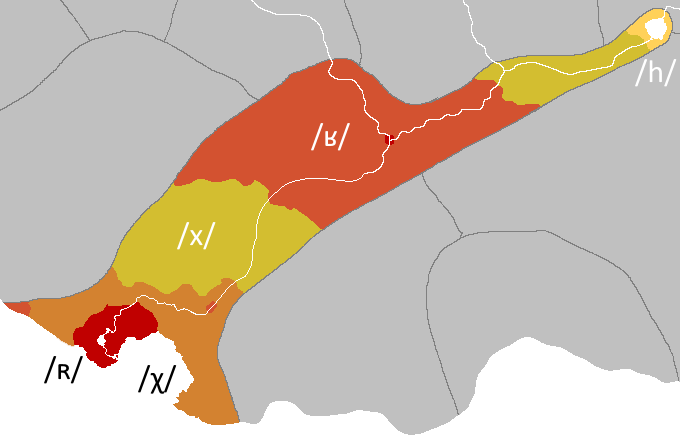
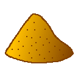
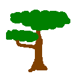
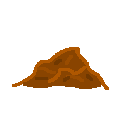
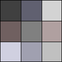
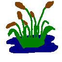
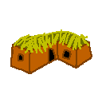
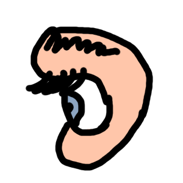

Eremoran Language
Eremoran (Eremoran: Eremorôm IPA: [ə.ʀəˈmɔ.ħom])
is the language spoken in Eremor (Eremoran: Eremor IPA: [əˈʀɛ.məʀ]),
an early iron age society in the rapidly changing continent of Pankair, on the planet Oneia.
The world itself is fairly earthlike, with only minor differences.
History
Proto-Eremo-Numoran
The following table is constructed for Proto-Eremo-Numoran:
| Labiovelar |
Alveolar |
Palatal |
Velar |
| *m |
*n |
|
| *b |
*t *d |
*tʃ |
*k *g |
| *ɸ *β |
*s |
*ʃ |
*x |
|
*l *r |
|
PEN had 15 consonants and 7 vowels.
There was likely no /p/ in Proto-Eremo-Numoran: it is totally absent in Numoran and many of the Eremoran words containing /p/ are known loans.
In numoran, two of these vowels are lost, and /ʃ/ merged with /tʃ/.
Note that PEN had no pharyngeal consonants.
Eremoran developed them under Pre-Eremoran influence, and under influence of the neighboring Takuan language family where they are common.
The syntax of Eremoran is probably the most divergent feature from other Muran languages.
Proto-Muran was a strongly case-driven, genderless, strongly prepositional accusative language.
Even as early as the PEN period, the language already lost many of these features.
PEN's parent proto-language, Proto-Muran, however, was a Nominative-Accusative language with eight cases, each of which is still extant in some Muran language.
The word dir evolved from a PEN polite adjective *dir (originally, it could only refer to Humans) which was supplanted by the loan ou, from Pre-Eremoran *po.
This adjective then marked the absolutive and was originally optional, but even by Old Eremoran then became mandatory.
PEN lost almost all traces of its case system, with the only inflection being in personal pronouns, for the nominative and accusative cases.
By PEN the first traces of Eremoran's current prepositions can be found:
*si (Dative; lost by Old Eremoran), *tʃu (Genitive), and *xêd (Locative).
In Numoran these became suffixes, but in Eremoran these became postpositions.
But not all changes were reductions in complexity.
PEN began to decline adjectives, unlike other Muran languages, declining them to gender and possibly case (but this is disputed).
By PEN, there were three genders: Masculine (*-r), Feminine (*-rre), and Non-human (*-Ø).
The human suffixes seem to be related to the agentive suffix (*-êr), but the exact relation,
and whether this is a coincidence, is difficult to ascertain, especially since all three morphemes seem to be a PEN innovation.
PEN also had a rather intricate system of counter words, many of which became new genders in its daughter languages, particularly Numoran.
In Numoran, many of these counters replaced the singular-plural distinction which was lost in PEN.
Proto-Muran distinguished number in personal pronouns, humans, most animate nouns, and a handful of inanimate nouns.
In PEN, like in Proto-Muran, adjectives and verbs were not inflected for number.
PEN also significantly reduced Proto-Muran's complex system of verbal conjugation and verbal clitics.
By PEN, the clitics totally vanished, and verbs only conjugated for three forms - nonpast, past, and conjunctive.
While Numoran continues to use these forms, Eremoran merged the other two into the conjunctive form.
This contrasts sharply with other Muran languages, which all retain
the active/mediopassive voice distinction, two past tenses, and deontic and potential moods.
Proto-Muran contained only five vowels.
PEN split *ê and *ô from *e and *o.
Pre-Eremoran Influence
Many of the features of contemporary Eremoran, in contrast with other Muran languages,
can be traced to the effect of the Pre-Eremoran substrate:
politeness distinction, the negative prefix,
the reorganization of the numeral system into groups of five,
the numerals six to nine,
the wholesale borrowing of the Pre-Eremoran writing and numeral system,
penultimate stress as the default (other Muran languages have antepenultimate or lexical stress instead),
the presence of /p/, and about 5% of the basic lexicon.
The development of uvular R is thought to have also been influenced by the presence
of /q/ in Pre-Eremoran.
In addition, the loss of negative concord
and the use of the locative ad as a comparative instead of the PEN particle *narm
were also influenced by Pre-Eremoran.
| Feature |
PEN |
Numoran |
Eremoran |
Pre-Eremoran |
| Labials |
/m b ɸ β/ |
/m b~β f/ |
/m b p f/ |
/m p w/ |
| Uvulars |
none |
/ʀ/ |
/q/ |
| Stress |
Antepenultimate |
Unpredictable |
~98% Penultimate |
Penultimate |
| Politeness |
no distinction |
Four Tiers |
Three Tiers |
| Numeral System |
Base-10 |
Hybrid Base-5/100 |
Base-20 |
| Six, Seven, Eight, Nine |
*sleʃtu, *lumu, *kedsu, *tailu |
esléito, lúmo, kétso, táilo |
elmnu, klimu, triksu, talsu |
ēlmenus, akalīnus, chiknus, talnus |
| Negative Concord |
Yes |
No |
| Comparative |
Particle (*narm) |
Particle (nan) |
Locative (ad) |
Locative (ta) |
| Writing System |
(none) |
West Važcudic |
South Važcudic |
Sound Changes
The following are known sound changes, arranged roughly from oldest to newest.
From Proto-Eremo-Numoran to Old Eremoran:
- /x[e/ɛ]/ > /a/
- /x/ > /k/
- /f s/ > /h/ word-initially
- inter-voiced /s/ > /z/ and /ss/ > /s/.
- /ɸ/ > /f/.
- /β/ > /b/.
- /i/ > /j/ between a consonant and a vowel.
- /sj zj tj dj/ > /ʃ ʒ tʃ dʒ/.
- /ʃ ʒ tʃ dʒ/ > /s z ts dz/.
- Unstressed vowels reduced to schwa.
- /g/ > /k/.
From Old Eremoran to Eremoran (ie. these sound changes were recorded):
- /ts/ > /s/.
- /h/ > /Ø/.
- /r/ > /ʀ/.
Comparison between Proto-Eremo-Numoran, Eremoran, and Numoran:
| English |
Eremoran |
Numoran |
Proto-Eremo-Numoran |
| beer |
bornakt
/ˈbɔħ.nəkt/
|
/ˈbweɾ.naxt/ |
/ˈβɔr.naxt/ |
| hammer |
bolant
/ˈbɔ.lənt/ |
/ˈbwe.ʎent/ |
/ˈβɔ.lɛnt/ |
| health |
henlôm
/ˈɛn.lom/ |
/ˈsjen.lon/ |
/ˈsɛn.lom/ |
| knowledge |
ahêkam
/əˈfe.kəm/ |
/aˈfe.kwen/ |
/ˈa.ɸe.kɔm/ |
| person |
mor
/mɔħ/ |
/mweɾ/ |
/mɔr/ |
| red |
ereu
/əˈʀɛu̯/ |
/ˈe.ɾjew/ |
/ˈɛ.rɛ.u/ |
| sight |
saurom
/sau̯.ʀəm/ |
/ˈsjaw.ɾɔn/ |
/siˈa.u.rɔm/ |
| that |
ho
/ɔ/ |
/swe/ |
/sɔ/ |
Phonology
 |
Letter frequencies of Eremoran words. |
There are 11 consonants, and 7 vowels in Eremoran.
Vowels change quality based on stress.
Stress is typically penultimate, but in some loanwords,
like, upiám
and kôbénk,
it may be ultimate.
A few native words like dáukaz
and hókio retain their original
PEN antepenultimate stress due to the awkwardness of penultimate stress in those words.
Irregular stress is not indicated in the orthography,
but for ease of learning they are indicated in the romanization
with an acute accent over the stressed vowel.
| Labial |
Alveolar |
Dorsal |
Glottal |
| m |
n |
|
|
| (p) b |
t d |
k |
| f |
s z |
ʀ |
(h) |
|
l |
| Writing |
Stressed |
Unstressed |
| a a |
ɑ |
ə |
| e e |
ɛ |
ə |
| ê ê |
e |
e |
| i i |
i |
ɪ |
| o o |
ɔ |
ə |
| ô ô |
o |
o |
| u u |
u |
ʊ |
Dialects
|  |
 |
The primary pronounciation of the rhotic in contemporary Eremoran. |
The usage of /ħ/. |
The following remarks apply to all dialects:
- Stress is on the penult.
- [ə] + non-schwa vowel = non-schwa vowel.
- /l ʀ/ are [ʕʷ ʀʷ] in the coda.
- /n/ is [ŋ] before /k/.
- Syllable structure is (C)(C)V(C)(C).
- Words spelt with <p> are Pre-Eremoran loans. In educated speech, it is pronounced [p], but elsewhere it is [f].
-
In younger speech, voiced stops are often devoiced and voiceless stops are instead aspirated.
Additionally, VN combinations tend to simply nasalize the vowel instead.
- /h/ is silent for most uneducated speakers, although there are some still pronouncing it [h ~ ʔ], primarily in rural areas west of Deftei (Bend-Highbrook Dialect) and those in the upper lake.
The following remarks apply to the capital dialect, the focus of this writing, but not necessarily others:
- /ʀ/ is [ħ] after /a ɔ/ except before front vowels.
- Voiced plosives /b d/ have fricatives as intervocalic allophones [β ð].
The following remark applies to dialects north of Deftei:
- /t d s z/ are palatalized to /tʃ dʒ ʃ ʒ/ before front vowels.
- The e, o, and u vowels merge with a unstressed, and ê, ô, and u (ie. remains unchanged) stressed.
The following remark applies to the Upper Eremoran dialect:
-
A new sound merger is developing where /f b m/ all merge into /m/.
Some speakers have a partial merger, while some may merge all three, such that the words barz, marz, and parz are homophones.
Younger speakers are more likely to possess this merger.
- Note that this means Upper Eremoran can have as few as nine consonants and five vowels
The following remarks apply to the Bend-Highbrook dialect:
- The Bend-Highbrook dialect is the sole dialect to retain the archaic masculine-feminine distinction.
Other dialects use the old masculine as the human noun class.
The feminine was formed like the masculine -r, and was -rre.
By the time of the ending loss, the only audible difference was stress shift and the length of the rhotic, so it is unsurprising it fell into disuse.
Some modern scribes still observe the distinction in writing, but is widely viewed as an archaicism and the practice is quickly vaporizing.
- Some of the older residents remember a time when the eldest residents still used alveolar /r/, so the transition to uvular /ʁ/ there was relatively recent.
- /f/ is instead typically /ɸ/.
Orthography
History
The Eremoran writing system is derived from the logosyllabary of the Pre-Eremorans.
Initially it used it as a syllabary and had complex rules for isolated consonants, but over time scribes stuck to the /a/-set, creating an abjad.
This was then supplemented with vowels, creating a true alphabet.
Letters
The order of the alphabet generally moves from back to front in place of articulation, and from fricatives to plosives to nasals, with unvoiced consonants coming first.
However, liquids were left at the end, then vowels were added, and the loan-letter for /p/ was re-borrowed (compare the symbol for /h/).
| Phoneme |
Carving |
Ink |
| k /k/ |
|
| s /s/ |
| z /z/ |
| t /t/ |
| d /d/ |
| n /n/ |
| h /h/ |
| b /b/ |
| m /m/ |
| r /ʀ/ |
| l /l/ |
| a /a/ |
| e /e/ |
| o /o/ |
| ê /ê/ |
| ô /ô/ |
| i /i/ |
| u /u/ |
| p /p/ |
Morphology
- Adjectives end in -u- + noun ending, except ho, id(a) and ko, which just has the ending.
- Verbs end in -z.
-
Five noun classes:
- Human - (also includes many toponyms) (-r)
- Animate - (also includes minibak "egg") (-k)
- Neuter 1 (Things that are harvested/broken from their source, used as tools...) - (-t)
- Neuter 2 (Other tangibles, the 'default' class) - (-Ø)
- Intangible - (-m)
Note that there are occasional exceptions to this rule, especially in proper nouns.
- /l/ -> /Ø/ is a "cutesy" sound change.
- Eremoran has productive partial and full reduplication:
- adv. → adv.: (Irr., usually Partial; No longer productive) more specific meaning of an adverb, eg. nen
- adj. → adj.: (Partial) adjective intensifier, eg. erereu 'very red'
- adj. → adj.: (Full) disparaging form of certain adjectives, eg. hoso, idid, koko
- adj. → n.: (Partial) noun possessing a quality, eg. dadal, elelak, kikir
- n. → n.: (Partial) This transformation has two uses:
- Deriving artificial equivalents of natural features, eg. bebekat, lanlant, mimit, mumust, tutut
- Deriving meats from animals, eg. bôbôt, didirat
- s-Reduplication
- Used with certain adjectives of age (marked s-triggering in this dictionary)
- The rhyme of the first syllable is reduplicated and the first syllable's onset becomes s:
- ardo 'wildfire' → tar sarardo 'new wildfire'
- abakt 'table' → muk saabakt 'old table'
Affixes
- -do = diminutive suffix, from dou
- -êr = en. -er, la. -ator
- -kair = like jp -san, a polite suffix for human referents
- -krum = -ology, from krum
-
-ma = rougly analogous to eo. -ejo, -ujo, -ingo, from PEN *ma, equivalent to modern mam
- Denotes plants whence their fruit/nuts came.
- -am = verb -> noun suffix
- -(i)sêm = -ity, -ness, -hood, noun -> noun, from -(i)su + -êr + -m
- -baz = passivizer. Only used in the formation of compounds, never as a verb in the end.
eg. *dindôbaz 'be translated' is impossible, but dindôbat 'translation' is.
- -(o)boz = intensive. From obo
- -dáukaz = like la. -esco or eo. -igxi. From dáukaz
- -(u)doz = frequentive. From udou
- -fkaz = inchoative, like eo. ek-. From ahkaz
- -kaldz = optative mood. From kaldoz
- -kiz = specifies the verb was performed intentionally.
- -kudz = terminative. Used to be a verb by itself,
now replaced by balitz and the loanword parz.
Related to kudam.
- -(e)laz = diminutive. From elau
- -(i)sêz = noun -> verb; do something relating to the root. From -(i)su + -êr + -z
- -sudôz = like -ify, -ize, ie. causative. From sudôz
- -tônz = defective aspect ("almost"). From the PEN adverb *tôn + -z, whence modern Eremoran tônu.
- -úbz = specifies the verb was performed accidentally.
- -(i)su = -like, or -ish, noun -> adj., related to the adposition su
- -udou = -er, the comparative, from udou
- -udoid(a)- = -est, the superlative, from udou id
- -lk = adjective -> adverb suffix
- u- is a non-productive negative prefix,
eg. uid "not" from *u- "not" + id "one".
- pu(h)- is a productive negative prefix coming from Pre-Eremoran.
Syntax
- Verbs do not conjugate at all; TAM is formed with special auxillary verbs.
- SOV order is the default, but the presence of the preposition dir effectively allows any order.
- Adjectives (incl. demonstratives and numerals) and genitives precede nouns.
- Adpositions come immediately after the noun they modify.
- Except dir, and sometimes ad,
which immediately precede the noun, regardless of any adjectives.
- dir is optional and can be omitted in simple statements with no other nouns, verbs, or topicalization.
- Eremoran uses double-headed relative clauses.
- eg. Ad abakt roraok numz abakt balitz.
= [onto] [table] [cat] [ran] [table] [broke] = The table the cat ran onto broke.
- The topic of the relative clause is always moved to the beginning.
- Adjective use:
- siu môr - "white person"
- simôr - "whiteperson"
- môsir - "something which looks like a whiteperson, but is contextually distinct"
Reactives
Eremoran typically distinguishes adjectives from adverbs very well, unlike colloquial English.
Most uninflected adjectives end in -u, and most adverbs end in -lk, with very little exception.
But there is a small class that lies in an awkward space in between.
These are the reactives - defôz, haia, nen, and obo.
Like adverbs, they come after what they modify.
Unlike adverbs, however, they can modify nouns in addition to verbs.
Like adjectives, these do not split adpositions from the nouns they modify.
In the dictionary, most of these are listed as particles except defôz, which is traditionally classified as a verb despite its contemporary usage.
When modifying a clause, reactives tell the listener that the speaker experienced the reaction from that situation.
Likewise, when modifying a noun phrase, reactives tell the listener that the existence of the noun phrase elicited that reaction.
Because of this use with noun phrases, the reactive obo is commonly used where other languages would use words like lo and behold.
While the structure of defôz clearly indicates it derives from a verb,
and nen appears to be an old reduplicated form of ne,
the ultimate origin of the remaining reactives is elusive.
They appear even in the oldest texts, alongside adjectives and adverbs,
and even then do not bear obvious structural similarities to any other word class or inflected form.
Vocab
Gestures
In addition to its rich system of paralinguistic clicks, Eremoran contains many hand gestures carrying meaning.
Their use is so common among Eremorans that many of the more common gestures are even understood in neighboring cultures.
Since they originated among traders, many of the signs concern commerce.
- Beautiful
- With the dominant hand flat, palm towards the head,
- The hand "scans" the face from top to bottom,
- Then the Good gesture is signed.
- Everything, Everyone
- With the dominant hand centered in front of the person, with the index finger pointing downards,
- "Draw" a circle with the finger.
- Disturbance
- With both hands in fists in front of the person, touching, as if holding a staff horizontally,
- Rotate the non-dominant hand upwards, and the dominant hand downwards, as if to twist the staff.
- Don't Know/Understand
- With the dominant hand in a fist, the same side of the head is knocked twice, about an inch above the ear.
- Fast
- With the non-dominant hand held out about a foot and a half,
- The fingers are snapped while simultaneously raising the hand.
- Gift
- Dominant hand centered in front of speaker, palm up.
- With the non-dominant hand, the palm is "swept" twice.
- Good
- With either hand, held as if grasping a one-inch staff,
- With nails touching the lips,
- The hand is dropped down and fingers splayed.
- Hello
- Single downwards nod of the head.
- Shares all other meanings of the interjection hênlom.
- Here
- Both index fingers pointed down at the ground.
- Know/Understand
- Initially begins identically to the gesture Don't Know.
- Instead, the fist is briefly held about two inches from the head.
- Finally, the air above the hand is "flicked" upwards.
- Write, Receipt, Sign
- With the non-dominant hand flat, palm facing the speaker's head,
- With the dominant index and thumb in a pinch,
- The dominant hand is moved around the palm, as if writing.
- [Question Gesture]
- In tandem with another gesture, the head is tilted towards the dominant side.
- Often, the eyebrows are raised.
Finger-counting is done starting with the dominant thumb, and extending left, as in much of Europe.
Humans are pointed at with all fingers, not just one, as for non-humans.
Important Sets
Numbers
Integers in Eremoran are a hybrid Base 5/Base 100 system.
For numbers under 100 it follows a strict Base 5 system,
albeit with special names for the numbers 6-9.
Numbers from 75 to 99 are constructed predictably but the pattern abruptly ends at 100,
which instead of being *babzananu is instead sesu.
The system then goes by powers of 100; 10,000 is sesesu, 1,000,000 is sesesesu, and so on.
The numbers 11-14 are also traditionally irregular,
although it is increasingly common to instead regularize them.
The fractional parts of numbers, however, are strictly decimal.
It is common to say hanu edzam to mean five parts of something,
ie. half of something.
Equally common would be to say nasisam.
Likewise, one can say id edzam or nasanisam to mean one tenth.
Higher powers of ten are expressed with ordinal suffixes to edzam.
edznasisam, or second part, would mean one hundredth.
Pi to two digits would thus be kumku id edzam babzu edznasisam,
but it might be faster to simply say kumku klimisam.
Alterntively, one could also say kumku tambabzu edznasisam.
- id
- nasu
- kumku
- babzu
- hanu
- elmnu
- klimu
- triksu
- talsu
- nasanu
- nasanu id (or tanid, from tan "after" + id "one"; ie. "one after (ten)")
- nasanu nasu (or tanasu, from tan "after" + nasu "two"; ie. "two after (ten)")
- nasanu kumku (or tankumku, from tan "after" + kumku "three"; ie. "three after (ten)")
- nasanu babzu (or tambabzu, from tan "after" + babzu "four"; ie. "four after (ten)")
- kumkanu
- babzanu
- hananu
- nasananu
- kumkananu
- kumkananu babzanu babzu
- sesu
In writing, Eremoran uses a base-20 system. The numbers 0-19 are as follows:
0123456789abcdefghij
The digits are written left-to-right.
Fractions of the form 1/n are represented as a line under n.
Fractions that cannot be represented this way, eg. 2/5, are written as a sum of fractions, eg.
55.
Colors
- red - ereu
- orange - erekanu
- yellow - kanu
- green - tasu
- cyan - linku
- blue - ulu
- purple - ereulu
- black - usiu
- white - siu
- grey - dalu
- brown - kaspsu
Common Personal Pronouns
In increasing order of politeness:
| Formality |
Gender |
Word |
Etymology |
| Disrespectful |
A |
umobor |
uo- + mo- + uo- + -r |
| A |
utôzdmêr |
utôzdmu + -êr |
| Informal |
A |
umor |
uo- + mor |
| A |
mar |
mat + -r; influenced by mara |
| Neutral |
A |
omor |
o- + mor |
| F |
ôkar |
o- + okar |
| Formal |
A |
omôr |
o- + mo- + o- + -r |
| A |
oker |
o- + ker |
| X |
môk |
mo- + o- + -k |
Yes-No
| Formality |
Yes |
No |
Etymology |
| Casual |
ok |
dadal |
Eye dialect spelling of holk
from dadal 'ash; dust' |
| Neutral |
holk |
uid |
ho + -lk
u- + id |
| Formal |
hona |
PEN *ɸona |
Intensity Adverbs
| eng. |
ere. |
parity |
| extremely |
hai |
postive |
| rather |
hô |
| somewhat |
huri |
| not very |
tu |
negative |
| not at all |
ban |
Times
| Eremoran |
English |
Terran Equivalent |
Notes |
| rilm |
day |
28.93 h |
- |
| nem |
year |
2 mo 14 d |
| bikém |
two decades |
4 yr 1 mo 7 d |
In Eremoran culture:
| bikém |
Eremoran |
English |
| 0 |
nubêr |
baby, infant |
| 1-2 |
elaêr (F elaôr, iktêr) |
child (girl) |
| 3-4 |
tazedor |
teen, young adult |
| 5+ |
hanbikér |
adult |
| 12+ |
tanasbêr |
elder |
|
Chess
| Eremoran |
English |
| bazêr |
king |
| okar |
queen |
| mananuk |
rook |
| numêr |
bishop |
| ek |
knight |
| subir |
pawn |
| bat |
chess, check |
| batlitam |
checkmate |
Adpositions
| Eremoran |
English |
Latin |
| ad |
at, by, during, for, into, onto, to, towards, until, up to, while |
ad, adusque, apud, dum, gratia, in, ob, pro, super, usque, vorsum |
| bo |
using, with |
per |
| din |
beyond, out of |
clam, clanculum, ex, extra, praeter, trans, uls, ultra |
| dir |
[Absolutive Case Marker] |
| dô |
in, on |
cis, in, intro, secus, super |
| hal |
according to, in accordance with |
cata, iuxta, penes, secundum, specie, vice |
| i |
[Topic Marker] |
| it |
as opposed to, instead of, in contrast to, rather than |
contra, erga, exadversum |
| ku |
with |
cum |
| kul |
about, around, concerning, near, next to |
circa, circiter, circum, iuxta, prope, re |
| mo |
before, behind |
ante, pone, post, prae |
| nad |
as |
qua |
| nost |
below, under |
infra, sub, subter |
| smad |
chez |
apud |
| su |
of |
de |
| tan |
after, in front of |
ante, coram, palam, post, prae |
| uku |
without |
absque, sine |
Phrasebook
| English |
Eremoran |
| Hello! Hey! Hi! |
Henlôm
Uzurkum rilm |
| Goodbye! |
Henlôm |
| Gesundheit! Bless you! |
Henlôm
Zikrômbór berbkaldz |
| Cheers! |
Henlôm
Ukumut mumat |
| Please, ~! |
~ hod tômz |
| Thank you! |
Uzurkelau |
| Sorry! |
lib berbkaldoz as |
| Excuse me! |
berbkaldoz |
| Nice to meet you! |
Uzurkum salim |
| Good morning! |
Uzurkum dam |
| Goodnight! |
Uzurkum urilm |
| Darn! Dang! |
Utôzdmu |
| I'm lost. |
Salitamaz |
| Please, help! |
Hakz hod tômz |
| I'm very sick/hurt. |
dir zurkum defôz |
| My ~ hurts. |
dir zurkum ~ ad |
| Call the police! |
dir afêssaur tukukaldz |
| You are very beautiful. |
omor i hai uzurkelaur |
| I love you. |
dir omor kopz |
| What is your name? |
Tukum ne
Tukum i dir naum ne |
| My name is ~. |
Tukum i ~ |
| Where are you from? |
kinam din dáukaz ne |
| I am from ~. |
~ din dáukaz |
| How are you? |
Hoz afkaz ne |
| I am well. |
Uzurkulk afkaz |
| I am unwell. |
Zurkulk afkaz |
| How old are you? |
hoz udoum nem ne |
| I am ~ years old |
~ nem |
| How do you say ~ in Eremoran? |
~ i eremorôm bo dir nau ne |
| Do you speak Eremoran? |
Eremorôm i afêkz ne
Eremorôm i rôtômz ne |
| Where is ~? |
~ i kinam ad ne |
| ~ is here. |
~ i kikom ad |
| Where is the nearest hotel? |
kuluudoidat dodamat i kinam ad ne |
| How do I get to ~? |
~ i kinam bo ne |
| You can get to ~ through ~~. |
~ i ~~ bo tômz |
| Is anyone here a doctor? |
kikom ad i dir henlôsudôêr ne |
| Where does it hurt? |
zurkum i kinam ad ne |
| How much does it cost? |
purrum i naum ne |
| Would you like to play chess? |
dir bat nomkaldoz ne |
| Do you want to go to a ~? |
ad ~ afkakaldoz ne |
| ... bar? |
bibimat |
| ... brothel? |
bimat |
| ... forest? |
lilira |
| ... hotel? |
dodamat |
| ... smithy? |
aramaêmat |
Full List
Compile word list
Compile initials
Compile medials
Compile finals
Compile length
Compile noun class
Compile meanings
There are currently about 500 words in the dictionary.
- abakt
- Etymology: Proto-Eremo-Numoran *abakt 'board'
- n., 3rd
-
- board, plank
- table
- tablet, map, document
- abask
- Etymology: Proto-Eremo-Numoran *aβasx 'duck'
- n., 2nd
-
- duck
- (metaphorically) idiot
- abbra
- Etymology: ad + bra
- n., 4th
-
- forehead
- abu
- Etymology: Proto-Eremo-Numoran *aβu 'ring'
- n., 4th
-
- ring
- abu is one of a handful of nouns ending in -u.
- ad
- Etymology: Proto-Eremo-Numoran *xêd 'to'
- post./prep.
-
- (prep.) to, towards
- (prep.) for
- (prep.) into, onto
- (prep.) until, up to
- (prep.) than
- (prep.) in comparison to, relative to
- (post.) at, by
- (post.) during, while
- (post., inanimate only) have: X Y ad = Y has X
- addam
- Etymology: ad + dam
- n., 5th; adv.
-
- tomorrow
- yesterday
- addáukaz
- Etymology: ad + dáukaz
- v.
-
- happen
- addzalk
- Etymology: Proto-Eremo-Numoran *abdialx 'eel'
- n., 2nd
-
- eel
- afêkam
- Etymology: afêkz + -am
- n., 5th
-
- knowledge
- information, datum, data
- afêkz
- Etymology: Proto-Eremo-Numoran *aɸêks 'know'
- v.
-
- know (both savoir and connaitre)
- understand
- learn
- afês
- Etymology: afêst, converted to 4th class
- n., 4th
-
- penis, dong, cock, dick
- afêsêr
- Etymology: afêst + -êr.
- n., 1st
-
- shortswordsman
- afêsma
- Etymology: afês + mat
- n., 4th
-
- vagina
- afêst
- Etymology: Proto-Eremo-Numoran *xeɸêʃt 'shortsword'.
- n., 3rd
-
- shortsword
- afêssaur
- Etymology: afêst 'shortsword' + saurz 'watch' construed as a 1st class noun
- n., 1st
-
- watchman, guard, policeman, officer
- afkaz
- Etymology: Proto-Eremo-Numoran *aɸkas 'go'
- v.
-
- go
- akeu
- Etymology: Proto-Eremo-Numoran *akeu 'east'
- adj.
-
- east
- ala
- Etymology: Proto-Eremo-Numoran *ala 'oak'
- n., 4th
-
- oak
- alika
- 
- Etymology: Proto-Eremo-Numoran *alika 'sand'
- n., 4th
-
- sand
- desert
- beach
- amzralz
- Etymology: Proto-Eremo-Numoran *amsrals 'count'
- v.
-
- count
- andôt
- Etymology: Proto-Eremo-Numoran *andôt 'oven'
- n., 3rd
-
- oven
- annama
- Etymology: ad "at; by" + namz "eat"
- v.
-
- fruit
- annumz
- Etymology: Proto-Eremo-Numoran *xênnums 'charge' from *xêd 'to' + *nums 'run'
- v.
-
- charge; rush; skirmish
- anôm
- Etymology: anoz + -am
- n., 5th
-
- thought; imagination
- anôt
- Etymology: anôm + -t
- n., 3rd
-
- painting, picture
- anoz
- Etymology: Proto-Eremo-Numoran *anos 'think'
- v.
-
- think; ponder; wonder; imagine
- arama

- Etymology: Proto-Eremo-Numoran *xere 'fire' + *ma 'bearer, holder, container'.
Compare Modern Eremoran dare 'gold', ardo 'fire', and mat 'house'.
- n., 4th
-
- native copper
- tetrahedrite
- malachite
- aramaêr
- Etymology: arama + -êr
- n., 1st
-
- metalsmith (more specifically, a coppersmith)
- aramaêmat
- Etymology: aramaêr "metalsmith" + mat "house"
- n., 2nd
-
- smithy
- aramafir
- Etymology: arama 'copper' + hi 'tooth'
- n., 1st
-
- military officer
- aramat
- Etymology: arama + -t
- n., 3rd
-
- copper
- ardo

- Etymology: Proto-Eremo-Numoran *xeredo 'flame', diminutive of *xere 'fire', from *x 'living; flickering(?)' + *ereu 'red'
- n., 4th
-
- (wild)fire
- ardom
- Etymology: ardo + -m
- n., 5th
-
- passion
- fever
- ardomut

- Etymology: ardo 'fire' + mu 'water' + -t
- n., 3rd
-
- wine
- ardomukaskrut
- Etymology: ardomut 'wine' + kaskru 'apple'
- n., 3rd
-
- cider
- ardzin

- Etymology: Proto-Eremo-Numoran *xeredo 'flame' + *in '???'
- n., 4th
-
- native silver
- ardzint
- Etymology: ardzin + -t
- n., 3rd
-
- silver
- arebaz
- Etymology: Proto-Eremo-Numoran *ereβas 'choose'
- v.
-
- choose, select
- vote (for)
- elect
- arêôk
- Etymology: Proto-Eremo-Numoran *arêôx
- n., 2nd
-
- cattle; cow
- arlira
- 
- Etymology: Proto-Eremo-Numoran *erelire 'deciduous tree', from *ereu 'red' + *lire 'wood'. cf. lilira, talira.
- n., 4th
-
- deciduous tree
- arz
- Etymology: Proto-Eremo-Numoran *ars 'stand'
- v.
-
- stand
- stay, remain
- stop, halt, cease
- as
- Etymology: Proto-Eremo-Numoran *assa 'each other'
- adv.
-
- each other (reciporical)
- asmarz
- Etymology: Proto-Eremo-Numoran *assamars 'relax'
- v.
-
- (intransitive) relax
- attô
- Etymology: at + tô
- n., 4th
-
- face
- babzu
- Etymology: Proto-Eremo-Numoran *babsu 'four'
- adj.
-
- four
- badmak

- Etymology: Proto-Eremo-Numoran *badmax 'fox'
- n., 2nd
-
- fox
- baim
- Etymology: Proto-Eremo-Numoran *βaim 'reason'
- n., 5th
-
- reason; excuse
- bakaz
- Etymology: Proto-Eremo-Numoran *βakas
- v.
-
- get; receive
- understand
- baliz
- Etymology: Proto-Eremo-Numoran *balis 'buy'
- v.
-
- trade, buy, sell, exchange
- X trades Y for Z's A - X dir Y ad A Z ad baliz
- balitz
- Etymology: Proto-Eremo-Numoran *balits 'die'
- v.
-
- die
- (intransitive) end
- (intransitive) extinguish
- (of food) go bad
- Note: With causative, means kill.
- ban
- Etymology: Proto-Eremo-Numoran *βan
- adv.
-
- (negative) hardly, barely, not at all
- banbanz
- Etymology: reduplcated form of banz
- v.
-
- be emotionally moved
- bant
- Etymology: Proto-Eremo-Numoran *βankt 'knife'
- n., 3rd
-
- knife
- banz
- Etymology: Proto-Eremo-Numoran *βans 'feel'
- v.
-
- feel
- barz
- Etymology: Proto-Eremo-Numoran *bars 'bind'
- v.
-
- bind
- unite
- bat
- Etymology: Proto-Eremo-Numoran *βat 'rope'
- n., 3rd
-
- rope
- Etymology: baz + -t
- n., 3rd
-
- chess
- (chess) check
- bata
- Etymology: Proto-Eremo-Numoran *βata 'intestines'
- n., 4th
-
- intestines, guts
- batlitam
- Etymology: blend of bat 'chess; check' + balitam 'death'
- n., 5th
-
- (chess) checkmate
- batu
- Etymology: Proto-Eremo-Numoran *batu 'also'
- adv.
-
- also, too
- baz
- Etymology: Proto-Eremo-Numoran *βas 'lead'
- v.
-
- lead
- bazêr

- Etymology: baz + -êr
- n., 1st
-
- leader, ruler
- emperor, king
- (chess) king
- be
- Etymology: Proto-Eremo-Numoran *βe 'or'
- conj.
-
- or, either
- see nanau for an or linking nominals
- bebekat
- Etymology: Reduplicated from beka 'way'
- n., 3rd
-
- road, street
- beka
- Etymology: Proto-Eremo-Numoran *βega 'way'
- n., 4th
-
- way, path
- befôz
- Etymology: Proto-Eremo-Numoran *beɸôs 'use'
- v.
-
- use
- bêm
- Etymology: Proto-Eremo-Numoran *βêm 'period'
- n., 5th
-
- period, interval
- duration
- era, age
- cycle
- berbz
- Etymology: Proto-Eremo-Numoran *berbs 'leave'
- v.
-
- leave (a location)
- (+ optative) excuse, pardon
- betlaêr
- Etymology: betlat + -êr.
- n., 1st
-
- longswordsman
- betlat
- Etymology: Proto-Eremo-Numoran *betlext 'sword'.
- n., 3rd
-
- longsword
- bêtu
- Etymology: Proto-Eremo-Numoran *bêtu 'loyal'.
- adj.
-
- loyal
- bi
- Etymology: Proto-Eremo-Numoran *bi 'leaf'.
- n., 4th
-
- leaf
- bibi
- Etymology: Proto-Eremo-Numoran *bibis 'eat'.
- n., 4th
-
- breast
- bibimat
- Etymology: bibiz "drink" + mat "house"
- n., 2nd
-
- bar, pub
- bibiz
- Etymology: Proto-Eremo-Numoran *bibis 'eat', reduplicated from *bis 'eat'
- v.
-
- (of poisoned food) eat
- (of alcoholic or poisoned beverages) drink
- bikém
- Etymology: Pre-Eremoran apikkei
- n., 5th
-
- a period of two decades
- bikil
- Etymology: Proto-Eremo-Numoran *βikil 'feather'
- n., 4th
-
- feather
- bilu
- Etymology: Proto-Eremo-Numoran *βilu 'fat'
- n., 4th
-
- fat (substance)
- bilu is one of a handful of nouns ending in -u.
- bim
- Etymology: Proto-Eremo-Numoran *βim 'battle'
- n., 5th
-
- battle
- (euphemistic) sex
- bima
- Etymology: bi 'leaf' + -ma 'plant'
- n., 4th
-
- plant
- bimam
- Etymology: bim "battle" + mam "place"
- n., 5th
-
- battleground
- bimat
- Etymology: bim "battle" + mat "house"
- n., 2nd
-
- brothel
- biniam
- Etymology: Proto-Eremo-Numoran *biniom 'imagination'
- n., 5th
-
- (archaic, dialectal) imagination
- bit
- Etymology: bi "leaf" + -t
- n., 3rd
-
- page
- bo
- Etymology: Proto-Eremo-Numoran *bo 'with'
- post.
-
- with (instrumental)
- see ku for the comitative
- bôbôt
- Etymology: Reduplicated from bôk 'chicken'
- n., 3rd
-
- chicken (meat)
- bôk
- Etymology: Proto-Eremo-Numoran *βôx 'chicken'
- n., 2nd
-
- (live) chicken
- bolant

- Etymology: Proto-Eremo-Numoran *βolent 'hammer'
- n., 3rd
-
- hammer
- bornakt
- Etymology: Proto-Eremo-Numoran *βornaxt 'beer'
- n., 3rd
-
- beer
- bra
- Etymology: Proto-Eremo-Numoran *bra 'eyebrow'
- n., 4th
-
- eyebrow
- breka
- Etymology: syncopated form of dirabeka
- n., 4th
-
- sea
- Synonym: dirabeka
- brekink
- Etymology: breka + ink
- n., 2nd
-
- sea cow, manatee
- bu
- Etymology: Proto-Eremo-Numoran *bu 'boom'
- interjection
-
- boom, bang
- bukt
- Etymology: Proto-Eremo-Numoran *bugt 'clothing'
- n., 3rd
-
- clothing
- busia
- Etymology: Pre-Eremoran *apusia 'ass, but'
- n., 4th
-
- ass, butt
- busisudôz
- Etymology: busia "ass" + sudôz "do"
- v.
-
- have anal sex
- da
- Etymology: Proto-Eremo-Numoran *da 'earth'
- 
- n., 4th
-
- earth, dirt, ground, soil
- clay
- land, territory, country, nation
- Oneia
- This does not translate country or nation in all English uses. When referring to an ethnos, use mor instead.
- dadal

- Etymology: Proto-Eremo-Numoran *dadal 'ash', reduplicated from *dalu 'grey'
- n., 4th
-
- ash
- dust
- (informal) no
- dadalire

- Etymology: Proto-Eremo-Numoran *dadalire 'potash', from *dadal 'ash' + *lire 'wood'
- n., 4th
-
- potash
- daktarm
- Etymology: Proto-Eremo-Numoran *daktarm 'time'
- n., 5th
-
- time
- dalu
- 
- Etymology: Proto-Eremo-Numoran *dalu 'grey'
- adj.
-
- grey
- (of the sky) having moderate cloud cover
- dam
- Etymology: Proto-Eremo-Numoran *dam 'morning'
- n., 5th
-
- morning
- dan
- Etymology: Proto-Eremo-Numoran *dan 'often'
- adv.
-
- often; usually
- danlikz
- Etymology: Proto-Eremo-Numoran *danliks 'suck'
- v.
-
- suck
- danôak

- Etymology: Proto-Eremo-Numoran *da 'earth' + *nôax 'louse'
- n., 2nd
-
- bug, insect
- dare
- Etymology: Proto-Eremo-Numoran *da 'earth' + *xere 'fire'. Compare arama.
- n., 4th
-
- gold
- daremat
- Etymology: dare + -mat
- n., 3rd
-
- bank
- daret
- Etymology: dare + -t
- n., 3rd
-
- money (especially gold money)
- dasu
- Etymology: Proto-Eremo-Numoran *daʃu 'fast'
- adj.
-
- fast
- Etymology: da + su
- adj.
-
- dirty
- dáukaz
- Etymology: Altered form of adafkaz, from ad 'to' + afkaz 'go'
- v.
-
- come; arrive
- defôz
- Etymology: Proto-Eremo-Numoran *deɸôs 'be certain'
- v.
-
- [particle assuring the listener of what has been said]
- did
- Etymology: reduplicated from id 'one'
- adj.
-
- only
- didulk
- Etymology: did 'only' -(u)lk [adverbial suffix]
- adv.
-
- only; merely
- didirak
- Etymology: Reduplicated from dirak 'whale'
- n., 3rd
-
- whale meat
- dimbibiz
- Etymology: din + bibiz
- v.
-
- throw up, vomit, upchuck
- din
- Etymology: Proto-Eremo-Numoran *din
- post.
-
- out of
- beyond
- ~ give/take*: X i Y ad Z din = Z gives X to Y
- (informal, ardo i +) ~ love*: Y ad Z din = Y loves Z
- Note: * - There are many possible arrangements of this phrase.
To emphasize the recipient, ad may even be replaced by dir.
The most neutral phrasing is shown.
- dindôz
- Etymology: Proto-Eremo-Numoran *dindôs 'appraise' from *din 'with' + *dôs 'do; make'.
- v.
-
- appraise
- interpret, translate
- dindáukaz
- Etymology: din 'out of' + dáukaz 'come'
- v.
-
- become
- dinrôz
- Etymology: din 'out of' + rôz 'speak'
- v.
-
- announce; declare
- dir
- Etymology: 1st class ending of Old Eremoran *diu [polite affix] (nowadays replaced by ou), Proto-Eremo-Numoran *diu, reanalyzed as a preposition.
- prep.
-
- [Absolutive Particle]
- dirabeka
- Etymology: dirak 'whale' + beka 'way'
- n., 4th
-
- (archaic) sea, ocean
- Synonym: breka
- dirak
- Etymology: Proto-Eremo-Numoran *dirax 'whale'
- n., 2nd
-
- whale
- dô
- Etymology: Proto-Eremo-Numoran *dô 'in'
- post.
-
- in, on
- dôafkaz
- Etymology: Proto-Eremo-Numoran *dôaɸkas 'charge' from *dô 'in' + *aɸkas 'go'
- v.
-
- enter
- begin
- dodar
- Etymology: Proto-Eremo-Numoran *doder 'guest'
- n., 1st
-
- guest
- dodamat
- Etymology: dodar 'guest' + mat 'house'
- n., 3rd
-
- hotel
- dôkalz
- Etymology: Proto-Eremo-Numoran *dôkals 'ask', from *dô 'in' + *kals 'seek'
- v.
-
- ask
- dômo
- Etymology: dô 'in' + mo 'before'
- adv.
-
- again
- Always sentence-initial
- dômosaurz
- Etymology: dômo + saurz
- v.
-
- check, verify
- reconsider
- dômosôram
- Etymology: Blend of dômosaurz 'check' and rôram 'writing'
- n., 5th
-
- password
- dono
- Etymology: Proto-Eremo-Numoran *dono 'knee'
- n., 4th
-
- knee
- dônumz
- Etymology: Proto-Eremo-Numoran *dônums 'attack' from *ad 'to' + *nums 'run'
- v.
-
- attack; invade
- dôsaurz
- Etymology: dô 'in' + saurz 'see'
- v.
-
- act maliciously towards
- envy
- dou
- Etymology: Proto-Eremo-Numoran *dou 'few'
- adj.
-
- few
- less
- eba
- Etymology: Proto-Eremo-Numoran *eβa 'bark; skin; peel'
- n., 4th
-
- bark (of a tree)
- skin, hide, leather
- skin, peel (of a fruit)
- edzam

- Etymology: Proto-Eremo-Numoran *ediam 'part'
- n., 5th
-
- part
- section, segment, chapter
- sector, district
- a unit of measurement equal to one-quarter of one labnim (~42.6 mm)
- ek
- Etymology: Proto-Eremo-Numoran *ex 'horse'
- n., 2nd
-
- horse
- (chess) knight
- êkar
- Etymology: Proto-Eremo-Numoran *êkar 'man'
- n., 1st
-
- man
- husband
- elau
- Etymology: Proto-Eremo-Numoran *elau 'little'
- adj.
-
- little, small, tiny
- elaêr
- Etymology: elau + -êr
- n., 1st
-
- child
- elalak
- Etymology: Reduplicated from elau 'small'
- n., 2nd
-
- young
- elmnu
- Etymology: Pre-Eremoran ēlmenus 'six'
- adj.
-
- six
- empra

- Etymology: Pre-Eremoran ēmperā
evidently loaned from Važcud imphera "lemon",
with numerous descendants, being a well-travelled wanderwort.
- n., 4th
-
- lemon
- endou
- Etymology: Proto-Eremo-Numoran *endou 'high'
- adj.
-
- high, up
- expensive
- tall, deep
- long
- wide
- ensfu
- Etymology: Proto-Eremo-Numoran *ensɸu 'lewd'
- adj.
-
- lewd
- epeêr
- Etymology: epet + -êr.
- n., 1st
-
- spearman
- epet
- Etymology: Pre-Eremoran eppe 'spear'
- n., 3rd
-
- spear
- erekanu
- Etymology: ereu 'red' + kanu 'yellow'
- adj.
-
- orange
- erem
- Etymology: ereu + -m.
- n., 5th
-
- redness
- blush
- color
- twilight
- Note: used with tar (tar seerem) and muk (muk seerem) for dawn and dusk, respectively.
- eremor
- Etymology: ereu + mor.
- n., 1st
-
- an Eremoran
- the city Eremora
- the country Eremor
- eremorôm
- Etymology: eremor + rôm.
- n., 5th
-
- the Eremoran language
- ereu
- Etymology: Proto-Eremo-Numoran *ereu 'red'. Related to ardo 'fire'.
- adj.
-
- red
- ereulu
- Etymology: ereu 'red' + ulu 'blue'
- adj.
-
- purple
- etoz
- Etymology: Proto-Eremo-Numoran *etos 'believe'
- v.
-
- believe; think
- habbu
- Etymology: Proto-Eremo-Numoran *ɸabɸu 'fingernail'. Related to habin 'finger'.
- n., 4th
-
- fingernail
- toenail
- habin
- Etymology: Proto-Eremo-Numoran *ɸabin 'finger'. Related to habbu 'fingernail'.
- n., 4th
-
- finger
- toe
- habiz
- Etymology: Proto-Eremo-Numoran *ɸabiz 'live'.
- v.
-
- live
- hafa
- Etymology: Proto-Eremo-Numoran *ɸexɸex 'rain', reduplicated from *ɸex [onomatopoeia for falling rain]
- n., 4th
-
- rain
- hafaz
- Etymology: Verbalized from hafa
- v.
-
- (intransitive) rain
- hai
- Etymology: Proto-Eremo-Numoran *sai
- adv.
-
- very, extremely
- haia
- Etymology: Proto-Eremo-Numoran *ɸaia '[disappointment particle]'
- adv.
-
- [disappointment particle]
- haiu
- Etymology: Proto-Eremo-Numoran *saiu 'thick'
- adj.
-
- thick
- hakz
- Etymology: Proto-Eremo-Numoran *ɸakz 'help'
- v.
-
- help, aid
- hal
- Etymology: Proto-Eremo-Numoran *ɸal 'according to'
- post.
-
- according to, in accordance with
- halku
- Etymology: Proto-Eremo-Numoran *ɸalku 'heavy'
- adj.
-
- heavy
- important, serious
- profound
- hans
- Etymology: Proto-Eremo-Numoran *ɸants 'all'
- pron., adj.
-
- all, every
- and*
-
Roraok su lusik su dir hans kopdoz.
cat GEN dog GEN ABS all love-DIM
I like both cats and dogs.
- see ku for an and linking clauses
- hanu
- Etymology: Proto-Eremo-Numoran *ɸanu 'hand'
- n.,adj.
-
- hand
- five
- hanum
- Etymology: hanu + -m
- n., 5th
-
- hold, grasp, grip
- (noun + su +) [used to indicate an outcome effected with the hands]; by hand, ahold
-
Sazam i afêst su dir hanum zestiusudôz ômôrz.
awe TOP shortsword GEN ABS hold bent-CAUS EXP.PL
We were amazed to see him bend the shortsword by hand.
- hêan
- Etymology: Proto-Eremo-Numoran *ɸêan 'chin'
- n., 4th
-
- chin
- henlôm
- Etymology: Proto-Eremo-Numoran *senlôm 'health'
- n., 5th
-
- health
- truth
- hello, goodbye, gesundheit, cheers (also ukumut mumat)
- henlôsu
- Etymology: henlôm 'health' + -su
- adj.
-
- healthy
- true, real
- henlôsudôêr
- Etymology: agentive of henlôsudôz 'heal'
- n., 1st
-
- healer, medic, doctor
- henlôsudôz
- Etymology: causative of henlôsu 'healthy' or henlôm 'health'
- v.
-
- heal
- hi
- Etymology: Proto-Eremo-Numoran *ɸi 'tooth'
- n., 4th
-
- tooth
- hilbe
- Etymology: Proto-Eremo-Numoran *ɸilβe 'cloud'
- n., 4th
-
- cloud
- fog
- hilsiz
- Etymology: Proto-Eremo-Numoran *ɸiltsiaz 'mix'
- v.
-
- mix, blend
- hilsiu
- Etymology: hilsiz
- adj.
-
- mixed, blended, hybrid
- hisk
- Etymology: Proto-Eremo-Numoran *ɸiʃk 'crow'
- n., 2nd
-
- crow; raven
- ho
- Etymology: Proto-Eremo-Numoran *so 'that'
- adj.
-
- that, those (away from speaker and listener)
- hô
- Etymology: Proto-Eremo-Numoran *sô
- adv.
-
- rather
- hókio
- Etymology: ho + kiom
- adj.
-
- that (by listener)
- hod
- Etymology: ho + dô
- conj.
-
- if
- (+ tômz) please
- holk
- Etymology: ho + -lk
- adv.
-
- (informal) yes
- hona
- Etymology: Proto-Eremo-Numoran *ɸona 'indeed'
- adv.
-
- indeed
- (formal) yes
- hosoz
- Etymology: hoz + ho
- adv.
-
- thus, so
- anyways [filler word]
- hoz
- Etymology: Proto-Eremo-Numoran *ɸos 'how'
- adv.
-
- how
- huku
- Etymology: Proto-Eremo-Numoran *ɸugu 'south'
- adj.
-
- south
- huri
- Etymology: Proto-Eremo-Numoran *ɸuri
- adv.
-
- somewhat
- husaurz
- Etymology: hut "bow" + saurz "see"
- v.
-
- hunt
- hut
- Etymology: Proto-Eremo-Numoran *ɸut
- n., 3rd
-
- bow
- hutaz
- Etymology: Proto-Eremo-Numoran *ɸutas 'blow'
- v.
-
- blow (of the mouth)
- i
- Etymology: Proto-Eremo-Numoran *i [topic particle]
- post.
-
- [topic particle]
- Used to make have/give constructions like ad when the possessor is animate
- id
- Etymology: Proto-Eremo-Numoran *id 'one'
- adj.
-
- one
- some (fr. certain)
- or (exclusive)*
-
Roraok su lusik su dir id kopdoz.
cat GEN dog GEN ABS or love.DIM
I like either cats or dogs.
- see be for an or linking clauses
- cf. nanau
- idisu
- Etymology: id + -(i)su
- adj.
-
- first
- idu
- Etymology: id + -u
- adj.
-
- any
- iktêr
- Etymology: Proto-Eremo-Numoran *ikatêr, from *ikat- ??? + -êr
- n., 1st
-
- (archaic, dialectal) girl (older form of elaôr)
- imô
- Etymology: Proto-Eremo-Numoran *imô 'edge'
- n., 4th
-
- edge
- ink
- Etymology: Proto-Eremo-Numoran *inx 'cow'
- n., 2nd
-
- cow
- it
- Etymology: Proto-Eremo-Numoran *iat 'rather than'
- post.
-
- as opposed to, rather than, in contrast to
- instead of
- itrôz
- Etymology: iát + rôz
- v.
-
- reply, answer
- iu
- Etymology: Proto-Eremo-Numoran *iu 'reverse'
- adj.
-
- reverse
- kadôl
- Etymology: Proto-Eremo-Numoran *kadôl 'gem'
- n., 4th
-
- gem
- kaflam
- Etymology: Proto-Eremo-Numoran *kaɸlam 'victory'
- n., 5th
-
- victory
- kakrem
- Etymology: Proto-Eremo-Numoran *kagrem 'tone'
- n., 5th
-
- music
- tonality
- kalam
- Etymology: kalz + -am
- n., 5th
-
- need
- kaldôm
- Etymology: kaldoz + -am
- n., 5th
-
- search
- lack
- desire
- kaldoz
- Etymology: diminutive of kalz
- v.
-
- seek; search for
- miss; lack
- want
- kalz
- Etymology: Proto-Eremo-Numoran *kals 'ask'
- v.
-
- need
- kamurz
- Etymology: Proto-Eremo-Numoran *xamurs 'forbid'
- v.
-
- forbid; prohibit
- kanat
- Etymology: Proto-Eremo-Numoran *kanat 'chain'
- n., 2nd
-
- chain, link
- kanu
- Etymology: Proto-Eremo-Numoran *ganu 'yellow'
- adj.
-
- yellow
- karm
- Etymology: Proto-Eremo-Numoran *xarm 'war'
- n., 5th
-
- war
- kaskru

- Etymology: Proto-Eremo-Numoran *xaʃxru 'apple'
- n., 4th
-
- apple
- kaskru is one of a handful of nouns ending in -u.
- kasp

- Etymology: Pre-Eremoran kaspa 'nut'
- n., 4th
-
- chestnut
- nut (in general)
- kaspsu
- Etymology: kasp + -su
- adj.
-
- brown
- kasraz
- Etymology: Proto-Eremo-Numoran *kaʃras 'maybe'
- v.
-
- maybe
- kek
- Etymology: Proto-Eremo-Numoran *kex 'god'
- n., 2nd
-
- god
- ker
- Etymology: kek + -r
- n., 1st
-
- powerful person; aristocrat; noble
- skilled person; expert; master
- ki
- Etymology: Proto-Eremo-Numoran *ki 'foot'.
- n., 4th
-
- foot
- (archaic) leg
- kidôu
- Etymology: Proto-Eremo-Numoran *kidôu 'counterclockwise'
- adj.
-
- counterclockwise
- kiêr
- Etymology: kit + -êr.
- n., 1st
-
- axeman
- kika
- Etymology: Relatively recent blend of ki "foot" and koka "arm".
- n., 4th
-
- leg
- kikom
- Etymology: kim + ko
- n., 5th, adj.
-
- here
- available, at school/work
- kim
- Etymology: Proto-Eremo-Numoran *kim 'place'
- n., 5th
-
- place, location
- kinam
- Etymology: kim + nau
- n., 5th
-
- where
- kinê
- 
- Etymology: Proto-Eremo-Numoran *kinê 'reed'
- n., 4th
-
- reed
- cane
- kink
- Etymology: Proto-Eremo-Numoran *kinx 'weasel'
- n., 2nd
-
- weasel
- kikir
- Etymology: Reduplicated from kiu 'friendly'
- n., 1st
-
- friend
- kiom
- Etymology: kim + ho
- n., 5th, adj.
-
- there
- unavailable, away/off (work/school)
- kiskana
- Etymology: Proto-Eremo-Numoran *giʃkana 'birch'
- n., 4th
-
- birch
- kit
- Etymology: Proto-Eremo-Numoran *git 'axe'. Possibly related to kot.
- n., 3rd
-
- axe
- kiu
- Etymology: Proto-Eremo-Numoran *kiu 'friendly'
- adj.
-
- friendly
- klimu
- Etymology: Pre-Eremoran akalīnus 'seven'
- adj.
-
- seven
- ko
- Etymology: Proto-Eremo-Numoran *ko 'this'
- adj.
-
- this, these
- kôbensu
- Etymology: kôbénk + -su.
- adj.
-
- (literally) murine
- cute
- shy
- quiet
- kôbénk
- Etymology: Pre-Eremoran qōpena 'mouse',
from qōp 'love' + ena 'grain'
- n., 2nd
-
- mouse
- Any species of the suborder Myomorpha
- koka
- Etymology: Proto-Eremo-Numoran *koga 'arm'
- n., 4th
-
- arm
- kopam
- Etymology: kopz + -am
- n.
-
- love
- kopdoz
- Etymology: diminutive of kopz
- v.
-
- like
- kopz
- Etymology: Pre-Eremoran qōp 'love'
- v.
-
- love
- kot
- Etymology: Proto-Eremo-Numoran *got 'shield'. Possibly related to kit.
- n., 3rd
-
- shield
- kotaz
- Etymology: Proto-Eremo-Numoran *kotas 'shoot'
- v.
-
- launch
- shoot
- Note: this verb forms many compounds. (TODO; Will add soon!)
- kotik
- Etymology: Proto-Eremo-Numoran *gotix 'fish'
- n., 2nd
-
- fish
- kraz
- Etymology: Proto-Eremo-Numoran *graz 'walk'
- v.
-
- walk
- step
- krifan
- Etymology: Proto-Eremo-Numoran *griɸan 'fish'
- n., 4th
-
- wing
- krum
- Etymology: Proto-Eremo-Numoran *grum 'study'
- n., 5th
-
- study
- science
- kruz
- Etymology: krum + -z
- v.
-
- study
- ksu

- Etymology: Proto-Eremo-Numoran *xaʃua 'lung'
- n., 4th
-
- lung
- ksu is one of a handful of nouns ending in -u.
- ku
- Etymology: Proto-Eremo-Numoran *gu 'big'
- adj.
-
- (archaic) big, large, great
- Displaced by synonym udou after ku became sarcastic, and homophony after /g/ merged with /k/
- Etymology: Proto-Eremo-Numoran *ku 'and'
- post.
-
- and (clause-only: not nouns)
- with (comitative)
- see bo for the instrumental
- see hans for an and linking nominals
- kuafkaz
- Etymology: Proto-Eremo-Numoran *kuaɸkas 'join' from *ku 'with' + *aɸkas 'go'
- v.
-
- join
- kubarz
- Etymology: Proto-Eremo-Numoran *kubars 'gather', from *ku 'with' + *bars 'bind'
- v.
-
- gather
- kubatu
- Etymology: ku + batu
- adv.
-
- but, however
- too (ie. "too expensive")
- see bo for the instrumental
- kubôz
- Etymology: Proto-Eremo-Numoran *kubôs 'carry', from *ku 'with' + *bôs 'carry'
- v.
-
- carry, bear
- bring
- kudam
- Etymology: -kudz + -am
- n., 5th
-
- end
- kudôz
- Etymology: Proto-Eremo-Numoran *kudôs 'do; make' from *ku 'with' + *dôs 'do; make'.
- v.
-
- work together, conspire
- live together
- (1) be allied
- (1) be married
- 1 Habitual aspect only
- kul
- Etymology: Proto-Eremo-Numoran *gul 'around'
- post.
-
- around, about
- about, concerning
- near, next to
- kulu
- Etymology: kul + u
- adj.
-
- near, close
- kumku
- Etymology: Proto-Eremo-Numoran *kumku 'three'
- adj.
-
- three
- kumu
- Etymology: ku + mu
- adj.
-
- wet
- kumz
- Etymology: Proto-Eremo-Numoran *gums 'jump'.
- v.
-
- jump
- kun
- Etymology: Proto-Eremo-Numoran *xun 'snow'
- n., 4th
-
- snow
- kunôz
- Etymology: Proto-Eremo-Numoran *xunôz 'probably'
- v.
-
- probably
- kunumz
- Etymology: Proto-Eremo-Numoran *kunums 'attack' from *ku 'with' + *nums 'run'
- v.
-
- flock
- coincide
- agree; concur
- kureu
- Etymology: Proto-Eremo-Numoran *kureu 'west'
- adj.
-
- west
- labnit

- Etymology: Proto-Eremo-Numoran *labnit 'brick'
- n., 3rd
-
- brick
- (metaphorically) a refined, tasteful person
- laku
- Etymology: Proto-Eremo-Numoran *lagu 'good'
- adj.
-
- (archaic) good
- Displaced by synonym uzurku after laku became sarcastic
- lan
- Etymology: Proto-Eremo-Numoran *lan 'cover'
- n., 4th
-
- cover
- lanlant
- Etymology: Reduplicated from lan 'cover'
- n., 3rd
-
- undergarment
- len

- Etymology: Proto-Eremo-Numoran *len 'stone'
- n., 4th
-
- stone, rock
- lib
- Etymology: Proto-Eremo-Numoran *lib 'heart'
- n., 4th
-
- heart
- core
- center
- libaz
- Etymology: Proto-Eremo-Numoran *libos 'cry'
- v.
-
- cry, tear
- lilira
- Etymology: reduplicated from Proto-Eremo-Numoran *lire 'wood'. cf. arlira, talira.
- n., 4th
-
- forest, a wood
- linku
- Etymology: Proto-Eremo-Numoran *lingu 'cyan'
- adj.
-
- cyan
- (of the sky) clear
- lolz
- Etymology: Proto-Eremo-Numoran *lols 'laugh'
- v.
-
- laugh
- luksa
- Etymology: Proto-Eremo-Numoran *luksa 'neck'
- n., 4th
-
- neck
- lusik
- Etymology: Proto-Eremo-Numoran *lussix 'wolf'
- n., 2nd
-
- dog
- wolf
- maêr
- Etymology: *ma + -êr
- n., 1st
-
- mother
- maiusu
- Etymology: Proto-Eremo-Numoran *masiusiu 'stunned', from *mas 'contain' + *siusiu 'stunned, dazed', reduplicated from *siu 'bright'.
- adj.
-
- silly
- mam
- Etymology: mat + -m
- n., 5th
-
- home
- place
- malbnur
- Etymology: loan from a northern language, cf. Poltas
- n., 1st
-
- villain
- mana
- Etymology: Proto-Eremo-Numoran *mana 'nose'
- n., 4th
-
- nose
- mananuk
- Etymology: mana "nose" + hanu "hand" + -k
- n., 2nd
-
- elephant
- (chess) rook
- manaz
- Etymology: mana "nose" + -z
- v.
-
- (transitive) smell
- mara
- Etymology: Proto-Eremo-Numoran *mara 'blood'
- n., 4th
-
- blood
- markla
- Etymology: Proto-Eremo-Numoran *markla 'thing'
- n., 4th
-
- thing
- marz
- Etymology: Proto-Eremo-Numoran *mars 'bleed'
- v.
-
- bleed
- masêt
- Etymology: me + -(i)sêm + -t
- n., 3rd
-
- storage, store, stockpile
- masturk
- Etymology: Proto-Eremo-Numoran *mas 'contain' + *tur '???' + *-x [Animate suffix]
- n., 2nd
-
- rabbit
- mat
- 
- Etymology: Proto-Eremo-Numoran *ma 'bearer, holder, container' + *-t (suffix for tools)
- n., 3rd
-
- house
- housing; casing
- mekrak
- Etymology: Pre-Eremoran mēkara, loaned from Nuzdexax megaraxu, from Važcud meguarakhu "tingle-worm"
- n., 2nd
-
- a parastitic flatworm used primarily in torture and occasionally medicinally for its behavior-altering effects
- mi
- Etymology: Proto-Eremo-Numoran *mi [reflexive particle]
- adv.
-
- [reflexive particle]
- mim
- Etymology: Proto-Eremo-Numoran *mim 'idea'
- n., 5th
-
- idea
- thought
- minibak
- Etymology: Proto-Eremo-Numoran *minibax 'egg'
- n., 2nd
-
- egg
- Note: despite being animate, this refers to unfertilized eggs, too.
- mimit
- Etymology: Reduplicated from mim
- n., 3rd
-
- craft (object), work of art
- mo
- Etymology: Proto-Eremo-Numoran *mo
- post.
-
- behind (in space)
- before (in time)
- n., 4th
-
- back
- mok
- Etymology: mo + ko
- adv.
-
- already
- [Particle forming perfect aspect]
- now
- môlz
- Etymology: Proto-Eremo-Numoran *môlz 'wake up'
- v.
-
- wake up
- mom
- Etymology: Reduplicated from mo
- adv.
-
- a long time ago
- momtantan
- Etymology: mom + tantan
- adv.
-
- all the time [habitual aspect marker]
- monar
- Etymology: mor + nau
- n., 1st
-
- who
- mor

- Etymology: Proto-Eremo-Numoran *mor 'person' from Proto-Muran *mur 'person'
- n., 1st
-
- guy, person
- people, folk
- ethnos, country, nation
- mankind
- This does not translate country or nation in all English uses. When referring to territory, use da instead.
- morbik
- Etymology: Proto-Eremo-Numoran *morβix 'ant'
- n., 2nd
-
- ant
- morôz
- Etymology: Contraction of mor rôz ~ "It was mentioned"
- v. (Evidential; secondhand knowledge)
-
- [Specifies the speaker heard of the event mentioned]
- mosu
- Etymology: mor + -(i)su
- adj.
-
- popular, democratic
- ethnic, national
- mourilm
- Etymology: mo 'before' + urilm 'shadow'
- n., 5th
-
- antumbra
- mu

- Etymology: Proto-Eremo-Numoran *mu 'water'
- n., 4th
-
- water
- body of water
- liquid, juice, fluid
- mu is one of a handful of nouns ending in -u.
- mudadalt
- Etymology: mu 'water' + dadal 'ash' + -t
- n., 3rd
-
- lye
- muk
- Etymology: Proto-Eremo-Numoran *mugz 'old'
- adj., s-triggering
-
- (of inanimates) old
- (of inanimates) original
- mulen
- Etymology: mu 'water' + len 'stone'
- n., 4th
-
- ice
- hail
- mumast
- Etymology: Proto-Eremo-Numoran *mumast 'ship', from *mu 'water' + *mas 'container' + *-t
- n., 3rd
-
- ship, boat
- mumat
- Etymology: mu + ma + -t
- n., 3rd
-
- cup
- pitcher
- mumust
- Etymology: Reduplicated from mus 'flotsam'
- n., 3rd
-
- raft
- mut
- Etymology: mu + -t
- n., 3rd
-
- extract, essential oil, stock
- mus
- Etymology: Nominalization of musu 'wet'
- n., 4th
-
- flotsam
- musu
- Etymology: mu + -su
- adj.
-
- wet
- na
- Etymology: Proto-Eremo-Numoran *na 'ear'
- n., 4th
-
- ear
- naba
- Etymology: Proto-Eremo-Numoran *naβa 'root'
- n., 4th
-
- root
- nad
- Etymology: nau + ad
- prep.
-
- as, in the capacity/form of
- namz
- Etymology: Proto-Eremo-Numoran *nams 'eat'
- v.
-
- eat
- (of non-alcoholic and non-poisoned beverages) drink
- nanau
- Etymology: Reduplicated from nau
- n., adj.
-
- some (fr. quelque)
- something
- or (inclusive)*
-
Roraok su lusik su dir nanau kopdoz.
cat GEN dog GEN ABS or love.DIM
I like either cats or dogs.
- see be for an or linking clauses
- cf. id
- nasanu
- Etymology: nasu + hanu
- adj.
-
- ten
- nasisu
- Etymology: nasu + -isu
- adj.
-
- second
- (an)other
- nask
- Etymology: Proto-Eremo-Numoran *nassax 'carnivoran'
- n., 2nd
-
- carnivoran
- Note: this word does not refer to carnivores in general, only carnivorans.
- nasu
- Etymology: Proto-Eremo-Numoran *natiu 'two'
- adj.
-
- two
- nasusudôz
- Etymology: nasu + sudôz
- v.
-
- double
- copy
- natsu
- Etymology: Proto-Eremo-Numoran *natsu 'north'
- adj.
-
- north
- nau
- Etymology: Proto-Eremo-Numoran *nau 'which, what'
- adj.
-
- which, what
- naz
- Etymology: na + -z
- v.
-
- hear, listen (to)
- ne
- Etymology: Proto-Eremo-Numoran *ne
- part.
-
- [question particle]
- nem
- Etymology: Proto-Eremo-Numoran *nem
- n., 5th
-
- year
- nen
- Etymology: Reduplicated from ne [question particle]
- part.
-
- "Wouldn't it be interesting if..."
- nes
- Etymology: Proto-Eremo-Numoran *nes
- n., 4th
-
- typical place of sleep
- Typically refers to where the speaker usually sleeps, often a bedroom.
- nikiniki
- Etymology: Proto-Eremo-Numoran *nikiniki 'liver', reduplicated from *niki '???'
- n., 4th
-
- liver
- nikôk
- Etymology: Proto-Eremo-Numoran *nikôx 'otter'
- n., 2nd
-
- otter
- nindat
- Etymology: Proto-Eremo-Numoran *nindat 'bread'
- n., 3rd
-
- bread
- nôak
- Etymology: Proto-Eremo-Numoran *nôax 'louse'
- n., 2nd
-
- louse
- nod
- Etymology: Proto-Eremo-Numoran *nod 'moon'
- n., 4th
-
- Nikki (Moon of Oneia)
- moon
- nom
- Etymology: Proto-Eremo-Numoran *nom 'game'
- n., 5th
-
- game
- nomz
- Etymology: nom + z
- v.
-
- play
- nost
- Etymology: Proto-Eremo-Numoran *noʃt 'below, under'
- post.
-
- below, under
- nu
- Etymology: Proto-Eremo-Numoran *nu 'low'
- adj.
-
- low
- cheap
- short
- nubu
- Etymology: Proto-Eremo-Numoran *nubu 'young'
- adj.
-
- young
- nubêr
- Etymology: nubu + -êr
- n., 3rd
-
- infant
- newlywed
- numêr
- Etymology: numz + -êr
- n., 1st
-
- courier, messenger
- (chess) bishop
- numz
- Etymology: Proto-Eremo-Numoran *nums 'run'
- v.
-
- run
- nuu
- Etymology: Pre-Eremoran nuh 'nude'
- adj.
-
- nude, naked
- ô
- Etymology: Proto-Eremo-Numoran *ô 'anyways'
- interjection
-
- Anyways..., so... (used similarly to jp. ja, fr. alors)
- obo
- Etymology: Proto-Eremo-Numoran *obo '[excitement particle]'
- adv.
-
- [excitement particle]
- odar
- Etymology: ou + da + -r
- n., 1st
-
- one's deceased ancestors
- ôdou
- Etymology: Proto-Eremo-Numoran *ôdou 'away'
- adj.
-
- away
- óidak
- Etymology: Proto-Eremo-Numoran *oidax 'bird'
- n., 2nd
-
- bird
- (vulgar) dick, cock
- óidkaz
- Etymology: Blend of óidak and afkaz
- v.
-
- (of birds) fly
- ok
- Etymology: Eye-dialect spelling of holk in L-dropping dialects
- adv.
-
- (informal) yeah
- The k is occasionally pronounced as a glottal stop.
- oka
- Etymology: Proto-Eremo-Numoran *oka 'bone'
- n., 4th
-
- bone
- okar
- Etymology: Proto-Eremo-Numoran *okar 'woman'
- n., 1st
-
- woman
- wife
- (chess) queen
- ôkarinu
- Etymology: Pre-Eremoran ōkkarin 'crazy'
- adj.
-
- crazy
- omor
- Etymology: o + mor
- pron.
-
- 1st/2nd person pronoun
- see Pronouns for more details
- ômôrz
- Etymology: Contraction of ou mor saurz ~ "People saw"
- v. (Evidential; visual knowledge)
-
- [Specifies the speaker, and others, saw the event mentioned]
- cf. umôrz which implies the speaker was the sole witness
- onod
- Etymology: Proto-Eremo-Numoran *onod 'horn'
- n., 4th
-
- horn
- ou
- Etymology: Old Eremoran *ɸo-, from Pre-Eremoran *po- [polite prefix]
- adj.
-
- [polite affix]
- [affix used to form first/second person personal pronouns, eg. môk]
- pankudoz
- Etymology: diminutive of pankuz
- v.
-
- be apathetic
- pankuz
- Etymology: Pre-Eremoran panku 'happy'
- v.
-
- be happy
- param
- Etymology: parz + -am
- n., 5th
-
- chop, cut, slice
- indentation, notch
- parz
- Etymology: Pre-Eremoran par 'cut'
- v.
-
- chop, cut, slice
- indent
- whet
- pauêm
- Etymology: Pre-Eremoran pawē 'work'
- n., 5th
-
- work; job
- pemidak
- Etymology: pemik "snake" + da "earth"
- n., 2nd
-
- worm
- pemik
- Etymology: Pre-Eremoran pemi 'snake'
- n., 2nd
-
- snake
- pi
- Etymology: Pre-Eremoran pi
- interjection
-
- onomatopoeia for something sparkly or shiny
- pidzak
- Etymology: Old Eremoran pītsa "sheep", from Pre-Eremoran pʰīdʒa, evidently loaned from Važcud phijas.
- n., 2nd
-
- sheep
- pipibubu
- Etymology: reduplicated pi + reduplicated bu
- n., 4th
-
- lightning; thunder
- purru
- Etymology: Pre-Eremoran purru 'expensive', negative form of ru 'cheap'
- adj.
-
- costly, expensive, valuable
- dear, important
- purrum
- Etymology: purru "costly" + -m
- n., 5th
-
- cost, expense, value
- importance
- rab
- Etymology: Proto-Eremo-Numoran *rab 'belly'
- n., 4th
-
- belly
- rankenz
- Etymology: Proto-Eremo-Numoran *ɸrankens 'rise'
- v.
-
- rise
- raratit
- Etymology: partial reduplication of ratik 'animal'
- n., 3rd
-
- meat (in general, including flesh and fish)
- food
- ratik
- Etymology: Proto-Eremo-Numoran *ratix 'animal; creature'
- n., 2nd
-
- animal, creature
- raz
- Etymology: Proto-Eremo-Numoran *ras 'paint'
- v.
-
- paint
- ril
- Etymology: Proto-Eremo-Numoran *ril 'sun'
- n., 4th
-
- Namei
- sunlight
- rilm
- Etymology: ril + -m
- n., 5th
-
- day, sol (unit of time)
- daytime
- rilu
- Etymology: ril + -u
- adj.
-
- bright
- rinz
- Etymology: Proto-Eremo-Numoran *rins 'order'
- v.
-
- order, command, direct
- rô
- Etymology: Proto-Eremo-Numoran *rô 'tongue'
- n., 4th
-
- tongue
- rôm
- Etymology: rô + -m
- n., 5th
-
- speech
- language
- rômat
- Etymology: rôm + -ma + -t
- n., 3rd
-
- dictionary
- roraok
- Etymology: Proto-Eremo-Numoran *raoraox 'cat', reduplicated from *rao 'meow'
- n., 2nd
-
- cat
- roradok
- Etymology: Syncopated from roraodok, from Proto-Eremo-Numoran *raoraodox 'kitten', diminutive of *raoraox 'cat'
- n., 2nd
-
- kitten
- rôraz
- Etymology: rôm + raz
- v.
-
- write
- (+dir tikt ad X) hone X (a skill or weapon)
- rôz
- Etymology: rôm + -z
- v.
-
- speak; talk
- say
- ruskank
- Etymology: Pre-Eremoran rūskan,
from Nuzdexax ruthkang, from Važcud zothceng
- n., 2nd
-
- a zothceng, a large, semi-intelligent symbiotic fungus-anthive beast
- salim
- Etymology: saliz "meet" + -m
- n., 5th
-
- finding, discovery
- encounter, meeting
- saliz
- Etymology: Proto-Eremo-Numoran *sialis 'find'
- v.
-
- find, discover
- encounter, meet
- sarm
- Etymology: sart + -m
- n., 3rd
-
- unit of area equivalent to 50 square labnim, or about 1.452 m2
- sart
- Etymology: Proto-Eremo-Numoran *ʃart 'mat'
- n., 3rd
-
- mat, typically in the dimensions of 5-by-10 labnim
- saurom
- Etymology: saurz + -om (rare variant of -am)
- n., 5th
-
- sight, vision
- saurama
- 
- Etymology: saurom + -a
- n., 4th
-
- eye
- saurz
- Etymology: Proto-Eremo-Numoran *sim 'brightness' + *aurz 'sense???'
- v.
-
- see
- look
- watch
- read
- administrate
- sazam
- Etymology: Appears to be Proto-Eremo-Numoran *siu 'bright' + *asa '???' + *-m (Intangible suffix)
- n., 5th
-
- awe, fear, shock
- sazaz
- Etymology: sazam + -z
- v.
-
- fear
- Note: with causative, means "scare".
- se
- Etymology: Proto-Eremo-Numoran *sie 'grain'
- n., 4th
-
- grain
- a unit of measurement equal to one-fifteenth of one edzam (~2.84 mm)
- seba
- Etymology: Proto-Eremo-Numoran *seβa 'flower', poss. related to eba 'bark'
- n., 4th
-
- flower
- sedam
- Etymology: sedat + -m
- n., 5th
-
- unit of area about 3,100 m^2 or 0.76 acres
- sedat
- Etymology: se 'grain' + da 'earth' + -t
- n., 3rd
-
- farm; (crop)field
- sedu
- Etymology: Proto-Eremo-Numoran *sedu 'heterosexual'
- adj.
-
- heterosexual, straight
- sêdzak
- Etymology: Proto-Eremo-Numoran *ʃêdjax 'rat'
- n., 2nd
-
- rat
- sesu
- Etymology: Proto-Eremo-Numoran *sietiu 'hundred'
- adj.
-
- hundred
- sets
- Etymology: Proto-Eremo-Numoran *sets '~planet'
- n., 4th
-
- substellar object orbiting a star
- (by extension) planet
- (by extension) minor planet
- (by extension) comet
- sfus
- Etymology: Proto-Eremo-Numoran *sɸuʃ 'tail'
- n., 4th
-
- tail
- sifz
- Etymology: Proto-Eremo-Numoran *ʃiɸs "hit"
- v.
-
- hit
- siiz
- Etymology: Proto-Eremo-Numoran *siis [causative]
- v.
-
- (archaic) [causative]
- sim
- Etymology: siu + -m
- n., 5th
-
- brightness
- white
- simbu
- Etymology: Proto-Eremo-Numoran *ʃimbu 'new'
- adj.
-
- young
- sipam
- Etymology: Pre-Eremoran sipa
- n., 5th
-
- relationship
- siu
- Etymology: siz + -u
- adj.
-
- shining
- white
- (of the sky) having light cloud cover
- siz
- Etymology: Proto-Eremo-Numoran *sis 'shine'
- v.
-
- (intransitive) shine
- skiz
- Etymology: Proto-Eremo-Numoran *skis 'show'
- v.
-
- show
- skôkiz
- Etymology: Proto-Eremo-Numoran *ʃkôkis 'fly'
- v.
-
- (of non-birds) fly
- With the causative suffix, means 'hurl' or 'send'.
- skuiku
- Etymology: Proto-Eremo-Numoran *skuixu 'young', from *skuix 'offspring' + *-u [Adjectival suffix].
- adj.
-
- young
- skum
- Etymology: Proto-Eremo-Numoran *ʃxum
- n., 5th
-
- winter
- smad
- Etymology: Recent blend of su "of", mat "house", and ad "at"
- post.
-
- chez; at the house of
- soni
- Etymology: Proto-Eremo-Numoran *tʃoni 'hair'
- n., 4th
-
- hair
- spart
- Etymology: Pre-Eremoran aspar
- n., 3rd
-
- base, foundation
- sparu
- Etymology: spart + -u
- adj.
-
- basic
- spez
- Etymology: Pre-Eremoran aspe
- v.
-
- (intransitive) change
- be edited, redacted
- spem
- Etymology: spez + -m
- n., 5th
-
- change, version, edition
- setting(s), configuration
- stanu
- Etymology: Proto-Eremo-Numoran *stanu 'tin'
- n., 4th
-
- tin ore
- stanu is one of a handful of nouns ending in -u.
- stanut
- Etymology: stanu + -t
- n., 3rd
-
- tin
- a coin made of tin
- su
- Etymology: Proto-Eremo-Numoran *tʃu 'of; from'. Related to the suffix -(i)su.
- post.
-
- of; belonging to or made of
- subanbanz
- Etymology: su + banbanz
- v.
-
- experience
- note: implies other people were present who also experienced something
- subir
- Etymology: Proto-Eremo-Numoran *tʃuβir 'warrior', from *tʃu 'of' + *βim 'battle'
- n., 1st
-
- warrior, soldier
- (chess) pawn
- sudôz
- Etymology: Proto-Eremo-Numoran *tʃudôs 'do; make' from *tʃu 'of; from' + *dôs 'do; make'.
- v.
-
- (inanimate object) do/make
- (inanimate object) wear, be covered in
- (inanimate object) endure, last
- (intangible object) wait for
- (human subject, inanimate object) cook
- (human subject and object1) work as
- (human subject1) work at/for
- (human subject and object) draw/paint/etc., depict
- (animate subject and object) kill
- (animate subject and object) fuck; have sex with
- (animate subject, inanimate object, of a consumable1) enjoy
- (inanimate subject, human object) be a cause of termination for
- 1 Habitual aspect only
- sukaz
- Etymology: Proto-Eremo-Numoran *tʃukas 'cut' from *tʃu 'of; from' + *kas 'cut'.
- v.
-
- cut, split
- talira
- Etymology: Proto-Eremo-Numoran *talire 'evergreen', from older *taslire, from *tassu 'green' + *lire 'wood'. Related to taze, tasu, tasku. cf. arlira, lilira.
- n., 4th
-
- (archaic) evergreen, esp. pine
- tree
- wood
- talsu
- Etymology: Pre-Eremoran talnus 'nine'
- adj.
-
- nine
- tamal
- Etymology: Proto-Eremo-Numoran *tamal 'mouth'
- n., 4th
-
- mouth
- tamaz
- Etymology: Proto-Eremo-Numoran *tamas 'must'
- v.
-
- must, have to
- should
- tan
- Etymology: Proto-Eremo-Numoran *tan 'after'
- post.
-
- in front of (in space)
- after (in time)
- tanaiz
- Etymology: Proto-Eremo-Numoran *tanaias 'sleep'
- v.
-
- sleep
- tantan
- Etymology: Reduplicated from tan
- adv.
-
- eventually
- tar
- Etymology: Proto-Eremo-Numoran *tarz 'new'
- adj., s-triggering
-
- (of inanimates) new
- tasku
- Etymology: tasu 'green' + skum 'winter'. Related to talira, taze, and tasu.
- n., 4th
-
- pine
- tasusku is one of a handful of nouns ending in -u.
- tasu
- Etymology: Proto-Eremo-Numoran *tassu 'green', from *tase 'grass' + *-su '-ish'. Related to talira, taze, and tasusku.
- adj.
-
- green
- taze
- Etymology: Proto-Eremo-Numoran *tase 'grass'. Related to talira, tasu, and tasusku.
- n., 4th
-
- grass
- taze dô kadôl
- Etymology: literally, "a gem in grass"
- n., 4th, idiom
-
- someone or something that stands out among the crowd in some positive aspect, especially beauty
- tekka
- Etymology: Proto-Eremo-Numoran *tegxa 'tea'
- n., 4th
-
- tea (leaf)
- tekkat
- Etymology: tekka + -t
- n., 3rd
-
- tea (drink)
- temz
- Etymology: Proto-Eremo-Numoran *tems 'defend'
- v.
-
- defend, protect
- temêr
- Etymology: temz + -êr
- n., 1st
-
- protector
- father
- temêmor
- Etymology: temêr + mor
- n., 1st
-
- clan, house
- (extended) family
- tikam
- Etymology: tikt + -(a)m
- n., 5th
-
- precision, accuracy
- tikt
- Etymology: Proto-Eremo-Numoran *tixt 'arrow'
- n., 3rd
-
- arrow
- tiu
- Etymology: Pre-Eremoran ti
- adj.
-
- far, distant
- remote
- tô
- Etymology: Proto-Eremo-Numoran *tô 'head'
- n., 4th
-
- head
- tobê
- Etymology: Proto-Eremo-Numoran *toβê 'stick'
- n., 4th
-
- stick
- staff
- tôiu
- Etymology: Proto-Eremo-Numoran *tôiu 'such'
- adj.
-
- such
- tokêu
- Etymology: Proto-Eremo-Numoran *tokêu 'clockwise'
- adj.
-
- clockwise
- tômz
- Etymology: Proto-Eremo-Numoran *tômz 'can'
- v.
-
- can, be able
- be possible
- tônu
- Etymology: Proto-Eremo-Numoran *tôn 'almost (adv.)' + *-u
- adj.
-
- almost
- tônurilm
- Etymology: tôn 'almost' + urilm 'shadow'
- n., 5th
-
- penumbra
- tôsu
- Etymology: tô + -(i)su
- adj.
-
- chief, primary, main
- tôzdmu
- Etymology: Proto-Eremo-Numoran *tôzdmu 'evitable'
- adj.
-
- avoidable, evitable
- triksu
- Etymology: Pre-Eremoran chiknus 'eight'
- adj.
-
- eight
- trikz
- Etymology: Proto-Eremo-Numoran *triks 'bite'
- v.
-
- bite
- tritaiz
- Etymology: Proto-Eremo-Numoran *tritais 'fall'
- v.
-
- fall
- tu
- Etymology: Proto-Eremo-Numoran *tu
- adv.
-
- (negative) not very
- tukil
- Etymology: Proto-Eremo-Numoran *tuxil 'wind'
- n., 4th
-
- wind
- breath
- tukilk
- Etymology: tukil + -k
- n., 2nd
-
- soul
- ghost; spirit
- tukilm
- Etymology: tukil + -m
- n., 5th
-
- mood; spirit
- tukilz
- Etymology: Proto-Eremo-Numoran *tuxil 'wind; breath'
- v.
-
- breathe
- blow (of wind)
- tukum
- Etymology: tukuz + -m
- n., 5th
-
- name
- tukuz
- Etymology: Proto-Eremo-Numoran *tuxus 'shout'
- v.
-
- call
- name
- call out; shout
- tum

- Etymology: Proto-Eremo-Numoran *tum 'sky'
- n., 5th
-
- sky
- set of objects visible overhead from a reference point
- tutum
- Etymology: tutut + -m
- n., 5th
-
- upper bound
- tutut
- Etymology: Reduplicated from tum
- n., 3rd
-
- ceiling
- ube
- Etymology: u- + be
- adv.
-
- nor, neither
- udasu
- Etymology: u- + dasu
- adj.
-
- slow
- udou
- Etymology: u- + dou
- adj.
-
- big, great, large
- many, much
- more (incl. comparative)
- (with id) (the) most (incl. superlative)
-
Roraok i id -udou kopdoz.
cat TOP most like
I like cats the most.
- [optional plurality marker]
- uid
- Etymology: u- + id
- adv.
-
- not
- uidu
- Etymology: u- + idu
- adj.
-
- no, none
- uku
- Etymology: u- + ku
- post.
-
- without
- ukumu
- Etymology: uku + mu
- adj.
-
- dry
- ukuzestiu
- Etymology: uku- + zestiu
- adj.
-
- straight
- flat
- umonar
- Etymology: u- + monar
- pron.
-
- nobody
- umôrz
- Etymology: Contraction of uou mor saurz ~ "I saw"
- v. (Evidential; visual knowledge)
-
- [Specifies the speaker, but not others, saw the event mentioned]
- cf. ômôrz which implies others witnessed the event too
- una
- Etymology: u- + nau
- pron.
-
- nothing
- you're welcome
- undou
- Etymology: u- + endou
- adj.
-
- low
- shallow
- short
- thin
- ulu
- Etymology: Proto-Eremo-Numoran *ulu 'blue'
- adj.
-
- blue
- uod
- Etymology: u- + hod
- conj.
-
- unless
- upiám
- Etymology: Pre-Eremoran uppayāpa "rune; glyph; symbol",
evidently loaned from Važcud pagubu "writing", nominalization of pagu "write".
- n., 5th
-
- symbol, character, glyph
- logo, emblem
- cover art
- upiát
- Etymology: upiám + -t
- n., 3rd
-
- flag
- ur
- Etymology: Proto-Eremo-Numoran *ur 'so'
- adv.
-
- so
- urarz
- Etymology: ur + arz
- v.
-
- [forms gnomic aspect]
- urildom
- Etymology: diminutive of urilm
- n., 5th
-
- solar eclipse
- urilm
- Etymology: u- + rilm
- n., 5th
-
- darkness
- shadow, shade, umbra
- night
- urist

- Etymology: Proto-Eremo-Numoran *urissat 'dagger'
- n., 3rd
-
- dagger
- urmam
- Etymology: Proto-Eremo-Numoran *urmama 'joke'
- n., 5th
-
- joke
- usedu
- Etymology: u- + sedu
- adj.
-
- gay
- usiu
- Etymology: u- + siu
- adj.
-
- black
- dim
- (of the sky) having heavy cloud cover
- utôzdmu
- Etymology: u- + tôzdmu 'evitable'
- adj.
-
- unavoidable, inevitable
- darn, dang, oh well, how unfortunate
- uzurkelau
- Etymology: diminutive of uzurku
- adj.
-
- pretty, beautiful
- thank you
- uzurku
- Etymology: u- + zurku
- adj.
-
- good
- uzurkum urilm
- Etymology: uzurku urilm
- phrase
-
- goodnight
- scatter, hide
- zadu
- Etymology: Proto-Eremo-Numoran *sadu 'lip'
- n., 4th
-
- lip
- zadumu
- Etymology: zadu "lip" + mu "water"
- n., 4th
-
- spit, saliva
- zadumuz
- Etymology: zadumu "saliva" + -z
- v.
-
- spit
- salivate, drool
- zestim
- Etymology: Proto-Eremo-Numoran *sesetim 'angle', reduplicated from *seti 'joint'
- n., 5th
-
- angle
- bend
- zeti
- Etymology: Proto-Eremo-Numoran *seti 'joint'
- n., 4th
-
- joint
- zestiu
- Etymology: zestim + -u
- adj.
-
- angled
- bent
- zézpakam
- Etymology:
evidently loaned from Važcud zesepakubu "tilelaying", from zese "tile" + paku "lay; lie".
- n., 5th
-
- pattern
- esp. of interior wall painting patterns
- znarko
- Etymology: Proto-Eremo-Numoran *snarko
- n., 4th
-
- cheek
- zurku
- Etymology: Proto-Eremo-Numoran *surgu 'bad'
- adj.
-
- bad
- evil
- zurkum
- Etymology: zurku + m
- n., 5th
-
- evil
- pain, illness
Locations
- Eremor
- Etymology: ereu + mor
- Eremor, the people who speak the language you're reading about right now.
- Nadnekis
- Etymology: Borrowed from Nekŋaŋ Nednegiz, from Važcud Niknik Již "great mountain range"
- Nadnekis, the great east mountain range.
- Pankair
- Etymology: Borrowed from Pre-Eremoran Pānakkay,
from Nuzdexax Panakagaθ, from Važcud Penek Gath "Land of Penek"
- Pankair, the continent on which lies Eremor.
Names
Notice that in most -mor compounds, stress of the root is preserved.
- Ádramor
- Etymology: Metathesis of Árdomor
- (A)
- Árdomor
- Etymology: ardo 'fire' + mor 'person'
- (A)
- Arrôr
- Etymology: Proto-Eremo-Numoran Xêrrôr, nominalization of *xêrrôs from *xêd 'to' + *rôs 'speak'; Related to Numoran Xerror
- (M)
- Bazêlakur
- Etymology: bazêr + laku 'good ruler'
- (M)
- Bêbêtur
- Etymology: intensive reduplication of 'bêtu' 'loyal'
- (M)
- Éasur
- Etymology: Pre-Eremoran,
loaned from Važcud Egas.
- (F)
- Ebbazêr
- Etymology: Syncopated and assimilated form of *Epebazêr, from epet 'spear' + bazêr 'ruler', equivalent to English Genseric
- (M)
- Ebbazôr
- Etymology: Feminine form of Ebbazêr
- (F)
- Esur
- Etymology: Syncopated form of Éasur
- (F)
- Épemor
- Etymology: epet 'spear' + mor 'person'
- (M)
- Hafaela
- Etymology: hafa 'rain' + ela [diminutive]
- (F)
- Haffela
- Etymology: Assimilated form of Hafaela
- (F)
- Hor
- Etymology: Pre-Eremoran forō,
loaned from Važcud Folel.
- (F)
- Iúr
- Etymology: Pre-Eremoran Yurah,
loaned from Važcud Ilak "happy".
- (A)
- Ker
- Etymology: ker 'master'
- (M)
- Kutoker
- Etymology: Pre-Eremoran Loan; related to Ker
- (F)
- Lidór
- Etymology: Pre-Eremoran Lidōnō,
loaned from Važcud Lidunon "fire-heart".
- (F)
- Lôtor
- Etymology: Proto-Eremo-Numoran *ɸlôtor; Related to Numoran Flotwer and Lotwer
- (M)
- Lusikopêr
- Etymology: lusik 'dog; wolf' + kopz 'love' + -êr '-er', cf. Greek Philippos
- (M)
- Lusikopôr
- Etymology: Feminine form of Lusikopêr
- (F)
- Mankar
- Etymology: Syncopated form of Mánikar
- (F)
- Mánikar
- Etymology: Pre-Eremoran,
loaned from Važcud Manik "wise", originally gender-neutral.
- (F)
- Napaker
- Etymology: Pre-Eremoran Loan; related to Ker
- (F)
- Netar
- Etymology: Pre-Eremoran,
loaned from Važcud Nit.
- (F)
- Pamor
- Etymology: Unknown component *pa + mor 'person'
- (F)
- Parôkar
- Etymology: parz 'whet' + ou (polite affix) + okar 'woman'
- (F)
- Parônar
- Etymology: Dissimilated form of Parôkar
- (M)
- Saiur
- Etymology: Pre-Eremoran Sāyū,
loaned from Važcud Sagub "beloved".
- (F)
- Sioker
- Etymology: Pre-Eremoran Loan; related to Ker
- (F)
- Temêr
- Etymology: temêr 'protector; defender'
- (M)
- Temôr
- Etymology: Feminine form of Temêr
- (F)
- Zikrômbór
- Etymology: Old Eremoran Zikarônaborre of unknown origin, possibly related to zurku 'bad; evil'
- (F)
-
Goddess of Disease, never used as a given name.
Used in the interjection Zikrômbór berbkaldz (gesundheit; bless you; literally "May Zikrômbór leave you.").
Samples
| EN |
ER |
| They say a cat went onto the table. |
Dir roraok ad abakt afkaz morôz. |
| Did a cat go onto the table? |
Dir roraok ad abakt afkaz ne. |
| Wouldn't it be interesting if a cat got onto the table? |
Dir roraok ad abakt afkaz nen. |
| Maybe a cat went onto the table. |
Dir roraok ad abakt afkaz kasraz. |
| A cat went onto the table. |
Dir roraok ad abakt afkaz. |
| A cat did not go onto the table. |
Dir roraok ad abakt afkaz uid. |
| A cat is on the table. |
Dir roraok abakt ad. |
| A cat is not on the table. |
Dir roraok abakt ad uid. |
Translation Challenges
Note: Upper IPA is educated speech, analogous to RP or the Transatlantic dialects of English, and the lower IPA is the hip, trendy youthspeak.
From an unknown challenge.
Henlôm i anôm su ad kalom baim didulk dan.
truth TOP imagination GEN DAT lack excuse just usually
/ˈ(h)ɛn.lom i ˈa.nom su ad ˈka.lom bai̯m ˈdi.ðuʕʷk dan/
/ˈen.lõ i ˈa.nõ su at ˈkʰa.lõ paĩ̯ ˈti.zukʰ tã/
The truth is usually just an excuse for a lack of imagination.
Python.
Udouk addzalk omor su skôkiêt ad defôz!
PL eel 1 GEN fly:tool LOC INT
/ˈu.ðʊk ˈad.dzəʕʷk ˈɔ.məʀʷ su ˈskok.jet ad ˈdɛ.foz/
/ˈu.zukʰ ˈat.tsukʰ ˈo.mo su ˈskʰokʰ.jetʰ at ˈte.foz/
My hovercraft is full of eels!
The one ring's inscription.
Id abu i dir hans baz, id abu i saliz,
Id abu i dir hans saliz, urilm dô barz ku.
One Ring to rule them all, One Ring to find them,
One Ring to bring them all and in the darkness bind them.
From an Ithkuil sample.
Dir puhafêkur bukêr maiusêr su nuhisêm
kul tar sirinam dir saliz tan libófkaz.
ABS NEG:know:ADJ:AGR clothing:'-er' silly:'-er' GEN nude:NMLZ
about new AGR~order:NMLZ ABS find after cry<INCH>
The incompetent tailor began to cry after finding out about
the clowns’ new directive on nakedness.
Fiziwig
| EN |
ER |
Gloss |
| The sun shines. |
Dir ril siz. |
ABS sun shine |
| The sun is shining. |
| The sun shone. |
| The sun will shine. |
| The sun has been shining. |
| The sun is shining again. |
Dir ril siz nasisulk. |
ABS sun shine again |
| The sun will shine tomorrow. |
Dir ril siz addam. |
ABS sun shine tomorrow |
| The sun shines brightly. |
Dir ril siz siulk. |
ABS sun shine bright-ADV |
| The bright sun shines. |
Siu dir ril siz. |
bright ABS sun shine |
| The sun is rising now. |
Dir ril rankenz mok. |
ABS sun rise now |
| All the people shouted. |
Hans mor i tukuz. |
all person TOP shout |
| Many of the people shouted twice. |
Udour mor i tukuz nasulk. |
many-AGR person TOP shout two-ADV |
| Happy people often shout. |
Pankur mor tukuz momtantan. |
happy-AGR person shout HAB |
| The kitten jumped up. |
Dir roraodok i kumz. |
ABS cat<DIM> TOP jump |
| The kitten jumped onto the table. |
Dir roraodok i ad abakt kumz. |
ABS cat<DIM> TOP DAT table jump |
| My little kitten walked away. |
Omor su dir roraodok i kraz ôdoulk. |
1 GEN ABS cat<DIM> TOP walk away |
| It's raining. |
Hafaz. |
rain |
| The rain came down. |
Dir hafa dáukaz -. |
ABS rain come down |
| The kitten is playing in the rain. |
Dir roraodok i hafa dô nomz. |
ABS kitten TOP rain LOC play |
| Many little girls with wreaths of flowers on their heads danced around the bonfire. |
Udour dir iktêdor ho su tô dô seba su - ku ardoudot kul -. |
many-AGR ABS girl<DIM> DET head INE flower GEN wreath COM fire<AUG> CIRC dance |
| The crow dropped some pebbles into the pitcher and raised the water to the brim. |
Hisk i nanau dir lendo ad mumat tritaisudôz ku dir mu ad imô rankensudôz. |
crow TOP some ABS rock-DIM DAT water-container-[class 3] fall<CAUS> and ABS water DAT edge rise<CAUS> |
Learn Eremoran
Score: 0%
Review: 0
New Question/Skip
understood
needs review
Misc. Statistics
| ID |
|
State |
Reason |
Dialect Info/Etc. Notes |
| 1A |
|
Small |
11 < 15 |
as few as 9 and as many as 13 |
| 2A |
|
Large |
7 > 6 |
as few as 5 |
| 3A |
|
Low |
1.57 < 2 |
as low as 1.29 and as high as 2.4 |
| 4A |
|
In both plosives and fricatives |
t-d and s-z |
| 5A |
|
Both missing |
/p g/ |
for some dialects, other |
| 6A |
|
Uvular continuants only |
/ʀ/ |
for some dialects, none |
| 7A |
|
No glottalized consonants |
| 8A |
|
/l/, no obstruent laterals |
/l/ |
| 9A |
|
No velar nasal |
| 10A |
|
Contrast absent |
n/a |
for some dialects, contrast present |
| 11A |
|
None |
| 12A |
|
Complex |
eg. abakt |
| 13A |
|
No tones |
| 14A |
|
No fixed stress |
| 15A |
|
Not predictable |
| 16A |
|
No weight |
| 17A |
|
No rhythmic stress |
| 18A |
|
All present |
| 19A |
|
None |
| 20A |
|
Isolating/concatenative |
| 21A |
|
Monoexponential case |
| 21B |
|
Monoexponential TAM |
| 22A |
|
2-3 categories per word |
Aspect, Voice, Intent |
| 23A |
|
Dependent marking |
| 24A |
|
Dependent marking |
| 25A |
|
Dependent marking |
| 25B |
|
Non-zero marking |
| 26A |
|
Strongly suffixing |
| 27A |
|
Productive full and partial reduplication |
See Morphology |
| 28A |
|
No case marking |
| 29A |
|
No subject person/number marking |
| 30A |
|
Five or more |
5 |
| 31A |
|
Non-sex-based |
| 32A |
|
Semantic |
| 33A |
|
Plural word |
udou |
| 34A |
|
All nouns, always optional |
| 35A |
|
Number-indifferent pronouns |
| 36A |
|
Unique affixal associative plural |
-(i)sur |
| 37A |
|
No definite or indefinite article |
| 38A |
|
No definite or indefinite article |
| 39A |
|
'We' the same as 'I' |
| 40A |
|
No person marking |
| 41A |
|
Three-way contrast |
ko, hókio, ho |
| 42A |
|
Identical |
| 43A |
|
Related for non-human reference |
| 44A |
|
In 3rd person + 1st and/or 2nd person |
| 45A |
|
Pronouns avoided for politeness |
| 46A |
|
Generic-noun-based |
eg. kinam |
| 47A |
|
Identical |
see mi |
| 48A |
|
No person marking |
| 49A |
|
No morphological case-marking |
| 50A |
|
No case-marking |
| 51A |
|
Postpositional clitics |
| 52A |
|
Differentiation |
bo - ku |
| 53A |
|
One-th, two-th, three-th |
id > idisu |
| 54A |
|
No distributive numerals |
| 55A |
|
Absent |
| 56A |
|
Formally similar, not involving interrogative expression |
uid - uidu |
| 57A |
|
No possessive affixes |
| 58A |
|
Absent |
| 58B |
|
None reported |
| 59A |
|
No possessive classification |
| 60A |
|
Genitives and adjectives collapsed |
| 61A |
|
Without marking |
| 62A |
|
Sentential |
| 63A |
|
'And' different from 'with' |
hans vs. ku |
| 64A |
|
Differentiation |
hans vs. ku |
| 65A |
|
Grammatical marking |
| 66A |
|
No past tense |
| 67A |
|
No inflectional future |
| 68A |
|
From 'finish', 'already' |
mok |
| 69A |
|
Tense-aspect suffixes |
| 70A |
|
No second-person imperatives |
| 71A |
|
Normal imperative + normal negative |
| 72A |
|
Neither type of system |
| 73A |
|
Inflectional optative absent |
| 74A |
|
Verbal constructions |
| 75A |
|
Verbal constructions |
| 76A |
|
No overlap |
| 77A |
|
Direct and indirect |
| 78A |
|
Separate particle |
| 79A |
|
None |
| 79B |
|
None (= no suppletive imperatives reported in the reference material) |
| 80A |
|
None |
| 81A |
|
SOV |
| 83A |
|
OV |
| 84A |
|
XOV |
| 85A |
|
Postpositions |
| 86A |
|
Genitive-Noun |
| 87A |
|
Adjective-Noun |
| 88A |
|
Demonstrative-Noun |
| 89A |
|
Numeral-Noun |
| 90A |
|
Relative clause-Noun |
| 90B |
|
Relative clause-Noun (RelN) dominant |
| 90G |
|
Double-headed dominant |
| 91A |
|
Degree word-Adjective |
| 92A |
|
Final |
| 93A |
|
Not initial interrogative phrase |
| 94A |
|
Final subordinator word |
| 95A |
|
OV and Postpositions |
| 96A |
|
OV and RelN |
| 97A |
|
OV and AdjN |
| 98A |
|
Ergative - absolutive |
| 99A |
|
Ergative - absolutive |
| 100A |
|
Neutral |
| 101A |
|
Optional pronouns in subject position |
| 102A |
|
No person marking |
| 103A |
|
No person marking |
| 104A |
|
A and P do not or do not both occur on the verb |
| 105A |
|
Indirect-object construction |
| 106A |
|
Distinct from reflexive |
mi - as |
| 107A |
|
Present |
ba |
| 108A |
|
No antipassive |
| 108B |
|
no antipassive |
| 109A |
|
No applicative construction |
| 109B |
|
No applicative construction |
| 110A |
|
Sequential but no purposive |
| 111A |
|
Morphological but no compound |
| 112A |
|
Negative particle |
| 113A |
|
Symmetric |
| 115A |
|
Predicate negation also present |
| 116A |
|
Question particle |
| 117A |
|
Both Locational and Topic |
| 118A |
|
Nonverbal encoding |
| 119A |
|
Identical |
| 120A |
|
Possible |
| 121A |
|
Locational |
| 122A |
|
Gap |
| 123A |
|
Gap |
| 124A |
|
Subject is left implicit |
| 125A |
|
Balanced/deranked |
| 126A |
|
Balanced/deranked |
| 127A |
|
Balanced/deranked |
| 128A |
|
Balanced/deranked |
| 129A |
|
Different |
| 130A |
|
Different |
| 131A |
|
Decimal |
| 132A |
|
6 |
| 133A |
|
9-10 |
9 |
| 134A |
|
Green vs. blue |
tasu - linku - ulu |
| 135A |
|
Red vs. yellow |
ereu - kanu |
| 136A |
|
No M-T pronouns |
| 136B |
|
m in first person singular |
| 137A |
|
No N-M pronouns |
| 137B |
|
m in second person singular |
| 138A |
|
Others |
| 141A |
|
Alphabetic |
| 142A |
|
Logical meanings |
/ǀ/ - no; /ǁ/ - yes |
| 143A |
|
VNeg |
| 143F |
|
VNeg |
| 144A |
|
SOVNeg |
| 144B |
|
Immed postverbal |
| 144L |
|
SOVNeg |
| 144S |
|
Word&NoDoubleNeg |
Universals Archive
The Universals Archive
Universals not Violated:
1-6; 8-110; 113-123; 125-180; 182-195; 197-207; 209-239;
241-257; 259-261; 264-295; 297-321; 323-347; 349-371;
373-378; 380-387; 389-438; 440-443; 445-458; 460-464;
466-490; 492-512; 514; 516-521; 523-585; 588-668; 670-680;
682; 684-707 (todo)
Universals Violated:
7; 111-112; 124*; 181; 196; 208; 240; 258; 262-263; 296;
322; 348; 372; 379; 388; 439; 444; 459; 465; 491; 513; 515;
522; 586-587; 669; 681; 683; 708
Charts
 |
Initial frequencies of Eremoran words. |
 |
Medial frequencies of Eremoran words. |
 |
Final frequencies of Eremoran words. |
 |
Frequencies of noun classes in Eremoran. |
 |
Frequencies of number of meanings per word in Eremoran. |